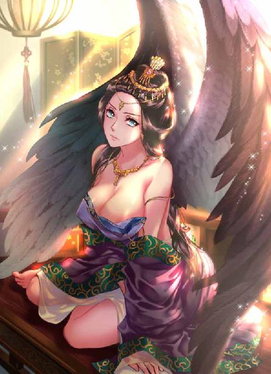
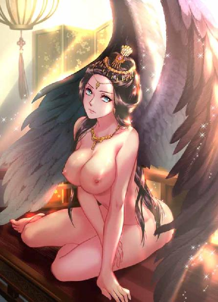

第74集·武穆遗书
汉国篇（26/28）
出版日期：2018-08-02
【本集内容简介】
镇国重器，永镇国祚！
武帝地宫内封存的秘宝现世，顿时闪瞎众人的眼睛。这东西好是好，可它开不出去啊！
秉政多年的汉国太后居然还是处子，吕雉羞愤得当场就要自尽。她究竟遭遇了什么？事隔多年，仍然让她恨意难消，对前天子仇怨入骨？
※ ※ ※ ※ ※

封面人物：吕雉

封面人物：吕雉（限制版）
石像上空浓重的乌云缓缓转动着，逐渐变得稀薄，几点细微的星光从云层间透出，似乎隔得极远，又似乎离得极近。
武皇帝陵深入地下，却能看到头顶的星空，这种违背常识的空间结构与太泉古阵如出一辙，程宗扬已经见怪不怪。但有过武皇金像前的异像，众人似乎都在期待着什么，连殇振羽都使劲瞅着小紫，各种眼色乱飞。
程宗扬把死丫头扯到身后，“怎么了？”
殇振羽眉毛几乎打成结，一边看着小紫，一边去看魔尊。
那尊深黑到看不清细节的魔像沉默着，萦绕着洪荒与远古的气息。
寂静中，闻清语轻笑一声，“真可惜，殇侯悉心挑选的衣钵传人，似乎并没有得到魔尊垂青呢。”
程宗扬指着魔尊脸上岳鸟人坏笑的面孔，“你说它？”
齐羽仙更直接，“敢问殇侯，那方才祭拜之时，魔尊为何未曾显圣？”
殇振羽冷哼一声，似乎不屑作答。
曹季兴插口道：“坏了吧？”
程宗扬一拍大腿，“诶，你这话说的有道理啊。”
齐羽仙道：“魔尊灵性未失，哪里会坏？”
程宗扬道：“这可是你说的有灵啊。瞧，脸都刻成这样了，它要是有灵，还不得活活气死？”
闻清语厉声道：“程侯慎言！”
剑玉姬止住众人争吵，“我等职责是迎回魔尊。此外不得妄言。”
程宗扬道：“你们要把它搬走？”
齐羽仙握住刀柄，“少主想要反悔？”
“你哪只眼看见我要反悔了？”程宗扬道：“程某向来一言九鼎！来，搬走吧。”
程宗扬果断拉着小紫离开，把魔尊留给巫宗诸人。可他们前脚刚走，后脚魔尊上方的乌云就紧跟着汇聚过来，云间电光隐现。
齐羽仙、闻清语等人脸色顿时黑了下来。
“上啊。我看好你们！”程宗扬大声鼓励，“区区一具魔尊，还能难得住你们？”
巫宗诸人没有程宗扬手里能引雷的电击棒，也不像小紫一样能令群雷辟易，有仇雍的前车之鉴，只能眼看着魔尊，却不敢妄入雷池一步。
程宗扬恪守诺言，不去争抢魔尊，却并没有走远，就那么停留在雷区之外，摆出一副看别人家出殡不嫌事大的架式。
齐羽仙深吸一口气，然后望向剑玉姬。
一声剑鸣，犹如龙吟，剑玉姬长剑出鞘。
“仙姬……”
剑玉姬淡淡道：“终不能让程少主小看了我等。”
说着她素手一扬，长剑游龙般射入乌云。无数电光刹那间从四面八方汇聚过来，带着连串惊雷之声，交错劈中剑身。剑玉姬长发飞起，雪白的袍袖像被烙铁划过一样，现出一道焦痕。
她对头顶的电光视而不见，抖手挥出腰间的丝带。雪白的长练飞出，缠住魔尊，剑玉姬藏在袖中的玉指一紧，深黑色的魔尊摇晃了一下，下方的青石发出一声脆响，被压出一片蛛网般的裂痕。显然这具魔尊像的份量远不止它体积看上去的大小，密度甚至超过普通的金属，沉重异常。
头顶无数电光银蛇般狂舞，惊雷阵阵，剑玉姬墨染般的秀眉微微挑起，丝带笔直绷紧，石台上的魔尊倾斜过来，剑玉姬顺势一引，将魔尊从台座上扯起。
眼看着魔尊以一种完全违背物理常识的姿态，被一条丝带牵起，即使恨不得把剑玉姬这贱人碎尸万段、挫骨扬灰，程宗扬也不得不对她显露出的这手功夫写个大大的“服”字。以柔御刚，以轻御重，自己要是努努力，说不定也能做到，可是像剑玉姬这样从容不迫，风清云淡，不沾半点烟火气，偏偏又是扯起如此沉重的魔尊像，那就是另一回事了。
剑玉姬粉颊浮现出一抹酡红，雪白的衣袖卷起，露出一截白玉般的皓腕。正当魔尊就要飞离台座，忽然头顶一声霹雳，那柄被电光包围的长剑再支持不住，剑身灵性尽失，化为凡铁。已经变形的剑身从空中坠下，正中丝带，带着炽热的高温将丝带一分为二。
断裂的丝带朝两端弹开，沉重的魔尊倒覆过来，往地面砸去。
以魔尊本身的份量，程宗扬很怀疑它会不会直接拍到石台里面，连抠都抠不出来。要是那样，乐子可就大了。上面天雷滚滚，下面一群人拿着撬棍，玩命地挖掘魔尊。天雷挨个劈过去，惨叫声此起彼伏……怪不得魔尊上面岳鸟人那张脸笑得那么开心呢。
眼看魔尊就要坠地，人影倏忽一闪，殇振羽跃入雷池，大袖飞扬，单掌托住魔尊，胸腔发出一声低喝，硬生生将魔尊托起。
殇振羽脚下的石台寸寸碎裂，头顶几道雷光同时劈下。殇振羽袖中飞出一柄短剑，接连挡下两道雷光，便已力竭，重新飞回袖中。接着又一道电光落下，殇振羽束发的金冠被电光劈中，裂成两半，周围发丝瞬间变得灰白。与此同时，数十道雷光带着“滋滋”的电流声，在空中交织成一道巨大的电网，往殇振羽笼罩下来。
曹季兴与程宗扬几乎同时出手，不过曹太监速度更胜一筹，身形鬼魅般一闪，掠入雷池，抢在程宗扬之前打出一片指影，迎向雷光。
肉身渡劫，曹季兴的下场也没能比仇雍好多少，指影与电光硬拼一记，只听一声惊天动地的雷霆震响，死太监带着一溜浓烟倒飞出去。
程宗扬同时掠入雷区，拿出电击棒，用力一拧，电击棒顶端射出一道巨大的电弧，汇入电网之中，头顶密密麻麻、纵横交织的电光像吃了大补丸一样蓦然大亮，紧接着惊雷连串滚落。
“干！拧反了！”程宗扬刚反应过来，一道惊雷便即落下。
“去！”卓云君祭出长剑，骈指一点，飞入雷网。
雷电声势大振，卓云君的凤羽剑只勉强挡住一瞬，电光猛烈地闪动一下，正中程宗扬头顶。他两耳“嗡”的一声，瞬间失聪，心脏仿佛被一只铁拳握住，停止跳动，浑身的血液都为之凝固，连视觉也同时丧失，眼前一片漆黑。
雷电像是长了眼睛一样，穿过肌肉和内脏，直入丹田，击中气轮。原本鼓胀欲裂的丹田受此重击，险些四分五裂。刚稳定不久的气轮疯狂地疾转起来，瞬间失去控制。电光火石之间，程宗扬顾不得恐惧，奋力催动真气，护住丹田方寸。
与此同时，又一道电光落下。程宗扬目眦欲裂，如果被它击中，引爆丹田的气轮，只怕自己当场就要灰飞烟灭。
这是……要死？
忽然间，身体一松，麻痹的肢体仿佛被清风吹过，重新恢复知觉，停滞的心脏缓慢跳动，视野也逐渐变得清晰。
丹田的气轮再一次安静下来，程宗扬呼了口气，这才注意到小紫正在自己身边，纤软的小手握住自己的手掌，十指相扣。头顶的电光敛入云层，重归平静。
殇振羽须发飞扬，神情凝重无比，一手托着魔尊，缓缓放回地上。
剑玉姬敛衣施礼，“多谢殇侯援手。”
殇振羽一甩袖袍，转身过去扶起曹季兴。曹太监一只手掌像被火烧过一样焦黑，张口吐出一股白烟，然后剧烈地咳嗽起来。
程宗扬惊魂甫定，指着剑玉姬怒道：“你是故意的吧！明知道拿不动，故意拖我们下水！”
“殇侯身为宗门元老，魔尊有厄，岂能袖手旁观？”剑玉姬道：“今日二宗联手，匡扶魔尊，诚为佳话。”
程宗扬还要开口，殇振羽抬起手，“就是这个话，不必再说了。”
“殇侯雅量。”剑玉姬侧身施礼，然后退开一步。
魔尊已经被送到雷池之外，头顶的乌云虽然还在盘旋，但已经失去威胁。齐羽仙与闻清语对视一眼，然后走到魔尊像前，抽出一条丝巾遮住石像的面孔，这才俯身叩拜。
魔尊固然值得尊敬，可那张脸实在太恶心了，对着岳贼的面孔叩拜，齐羽仙觉得自己恐怕要吐血。
一拜，二拜，三拜……齐羽仙站起身，脸色变得很难看。
剑玉姬如水的目光往身后看去，闻清语犹豫了一下，避开她的视线。剑玉姬目光打了个转，落在一名少年身上，略一点头。
那名少年昂首上前，在魔尊像前俯身叩拜。
等他站起身，魔尊仍然没有显露出任何异状。这下巫宗诸人神情都变得凝重起来。且不说小紫身为朱老头的衣钵传人、毒宗仅有的独苗，齐羽仙和刚才那位被选中的少年也都是公认的资质过人之辈，可魔尊始终没有显圣，难道魔尊真有问题？
在众人不安的目光下，殇振羽抬掌虚按，魔尊微微一震，表面泛起一层黑色的光泽。他皱起眉，魔尊灵性尚在，但弱了许多。考虑到魔尊的面部被岳贼改造过，或许伤及灵性也未可知。
闻清语道：“事不宜迟，我等这便护送魔尊北返，由教尊处置。”
剑玉姬望着殇振羽，最后点头应允。
齐羽仙与闻清语取出早已备好的白绫，小心翼翼地将魔尊包裹起来。
剑玉姬道：“魔尊回归，圣教大兴有望。此番功德，多谢殇侯成全。”说着她抬眼望向程宗扬，“程侯已入黑魔海门下，今后还望着对诸同门多加照拂。”
“谁跟你是同门了？”
“不拜魔尊，不得列入门墙。”剑玉姬从容道：“程侯方才已拜过魔尊。”
“等会儿！”程宗扬道：“我刚才拜的是武穆王，跟你们的魔尊可没有什么关系。”
“既然不拜魔尊，不得列入门墙。”小紫看着剑玉姬，好奇地问道：“你方才为什么不拜呢？”
齐羽仙板着脸上前一步，“紫姑娘，按当初约定，秘境除魔尊之外，其他五五分成。请姑娘先挑。”
程宗扬道：“五五分成？你们是没把我放在眼里啊。”
齐羽仙按住刀柄，眸中露出一丝杀意，“程侯何意？”
程宗扬一点不客气，拔出剧孟借他的长刀，往面前的石板上一插，捋起袖子道：“秘境中别的东西我不管，我只知道我岳父的东西都是我的，谁敢动，我跟他玩命！”
齐羽仙怒道：“好一个一言九鼎！”
“其他东西你们随便拿，我岳父的东西可是有主的。”
闻清语道：“程侯口中岳父叫得这么亲热，可别忘了，紫姑娘可从没有承认她是岳鹏举的女儿。”
“谁说紫丫头了？我说的是月霜！岳帅的女儿，武穆王的继承人！”程宗扬毫不心虚地拍拍胸口，“我家娘子！岳帅的遗物都是她的嫁妆，谁敢抢，就是跟我过不去！”
巫宗众人面面相觑，闻清语勉强道：“只听说程侯要迎娶云氏女，尚不闻程侯与岳姑娘结亲。”
“怎么着？我成亲还得你给发结婚证啊？我们都夫妻两年多了……啊！”
程宗扬惨叫一声，却是被云丹琉狠狠踩了一脚。
程宗扬此时突然发难，摆明了要胡搅蛮缠。剑玉姬当机立断，“好！岳帅遗物暂且不提，其余……”
程宗扬大度地说道：“其余的你们随便拿。只要殇侯爷没意见，你们把他祖坟搬空都行，我是无所谓。对吧，老头？”
殇振羽双手负在身后，淡淡道：“谁敢动我祖坟的东西——我跟他玩命！”
小紫笑道：“老头儿，你的口气好棒哦。”
齐羽仙气得双目发红，要不是打不过，她早就出手了。
“你瞧，我是讲道理的。”程宗扬道：“我们只拿自家的东西，其余的大家一人一半，我绝不占你们便宜。”
剑玉姬大有深意地看了他一眼，“既然如此，妾身告辞。”
齐羽仙还有些不甘心，“仙姬！”
剑玉姬微微一笑，“走吧。”
巫宗诸人抬起魔尊，还有尚在昏迷的仇雍等人，不言声地退出帝陵。
等他们彻底离开，程宗扬这才看向吕雉，“你找到什么东西了？非让我把她们赶走？”
吕雉摊开手，露出掌心的比目鱼珠，然后低声呢喃几句。
鱼眼周围散发出一圈白蒙蒙的微光，隐约能看到里面参差不齐的阴影，似乎是一个堆满物品的狭小空间，只是所有物品都像是蒙着一层厚厚的影子，看不清楚细节。
吕雉仔细调整着比目鱼珠的角度，掌心的光影时明时暗。
忽然光影微闪，视线中掠过一本厚厚的书册。程宗扬一眼看见封面上写着大大的“武穆秘籍”四字，旁边还有一行小字：“私人笔记，妄动者死！”
程宗扬心头一跳，岳鸟人的私人笔记？而且还藏得这么深！这个太后奴婢倒是不蠢，还知道先支开巫宗诸人。
程宗扬眯起眼睛，“在什么地方？”
吕雉轻叱道：“去！”
比目鱼珠缓缓飞上高处，然后流星般往帝陵深处飞去。
小紫唤道：“卓奴！蛇奴！”
听到女主人的吩咐，两女展开身形，一前一后往比目鱼珠飞走的方向掠去。
“我们也去！”程宗扬说着迟疑了一下，看着地上的曹季兴。老太监被雷劈过，就剩了一口气，这会儿还没有清醒的迹象，看来要找个人先把他送出去。
殇振羽提起曹季兴，“呯呯呯”，一连三掌，分别拍在他的脑门、前胸和后心。
老太监“哎呦”一声，睁开眼睛，有气无力地说道：“我就知道……只要跟武皇帝沾边，我们这些阉奴就得倒霉……”
殇振羽三掌拍完，肩膀便垮了下来，头发转为花白，腰背佝偻着，又换成朱老头的模样。
曹季兴拉住朱老头的手，“询哥儿，我不行了。我死之后……你就刨个坑，把我埋了吧……”
“打住吧。”朱老头没好气地说道：“祸害活千年，你且死不了呢。”
曹季兴露出一个苍老的笑容，“询哥儿，你不用安慰我了……我下边一点知觉都没有，看来离死不远了……”
“你下边早割了！”
“是吗？”曹季兴一骨碌爬起来，“割了啊？我差点儿都忘了。”
程宗扬黑着脸道：“曹公公，你怎么样？我们还得往里面进，你要不行，我先送你回去。”
“行！怎么不行？”曹季兴凛然道：“奴才死也要死在主子前边！”
朱老头一脚把他踢开，“让他跟着吧。”
程宗扬看了一下，一同进来的还有吕雉、云丹琉、阮香琳和赵合德。
吕雉掌握着比目鱼珠，肯定要去，云丹琉满眼跃跃欲试，显然对秘境好奇心十足。至于合德，连自保的能力都没有，把她留下来也不合适。
“琳儿，你留在这里。”
阮香琳道：“要不要让长伯他们也进来？”
“不用。让他们在外面仔细守好，小心那贱人贼心不死，杀个回马枪。”
程宗扬心里自有分寸，毕竟是朱老头的祖坟，进来的人太多也不合适。
阮香琳答应下来。程宗扬与众人一道，往帝陵深处走去。
曹季兴确实伤得不轻，但他是在剑玉姬、殇振羽接连挡下几道雷霆之后才被劈中，比一头撞进雷池的仇雍幸运得多，再加上朱老头不惜本源出手施救，伤势已经稳住，行走无碍。
他把受伤的手臂揣在袖子里，凑过来道：“小主子，刚才那几个……都是你的侍妾？”
被云丫头踩过的脚背还在作痛，程宗扬含糊道：“不……全是……”
“奴才瞧着，这里头有几个是能生的。”
“你还懂这个？”
“可不是嘛。”曹太监躬着腰，胁肩谄笑地小声说：“胯宽屁股大，指定好生养。像太后娘娘那样的，用是能用，想怀胎可不容易。就是怀上，也不好生下来。再说了，说不定生下来是个蛋呢？”
程宗扬呛得连连咳嗽，“羽族也是胎生吧？”
“那可说不准。”曹季兴俯在他耳边道：“她在宫里一直都没生，八成是生不出来。”
吕雉恍若未闻，但袖中的玉指紧紧握着，死死忍住才没有抽他。
“小主子春秋正盛，可得加把劲儿，多生几个小小主子出来。毕竟主子爷可就你这一根独苗苗啊。”
程宗扬脑门都是疼的，自己怎么就坐实了是死老头的私生子呢？
云丹琉与小紫两人小声嘀咕几句，然后旋风般转过身，后知后觉地厉喝道：“臭太监！你说谁胯宽屁股大？”
“哎哟，小姑奶奶！”曹季兴赶紧凑上去，“小的是夸你呢。像刚才那个，桃花眼，水蛇腰，就算能生，也不是宜男之相。小姑奶奶英气逼人，只要怀上，妥妥是个白白胖胖的主子哥儿。你这相貌，福气大着呢。”
小紫笑着把赵合德拉过来，“你看她呢？”
“小主子身边这些姑娘，一个赛一个的漂亮，一个赛一个有福！这位小夫人相貌好，性子好，瞧着就让人心疼。”
“那我呢？”
“那还用说？小主子爷后宅百花争艳，全指望您照看呢。紫妈妈，您走好，小心地上滑。”
小紫笑道：“你这么会说，怎么一直是个打杂的呢？”
“奴才这马屁也是分人的，有些配奴才拍马屁，有些她就不配。”
“太后娘娘也不配吗？”
“她？要说吧，太后也是个有手腕的，可一遇上她那个不成器的弟弟，就活活被猪油蒙了心。任由那小崽子在宫里胡作非为，也不管管。奴才也是不明白，就算当年怨气再大，先帝死了也就完了，怎么还没完没了呢？宫里乱成那样，娘娘脸上能有光彩？”
吕雉忽然回首，冷冰冰看了曹季兴一眼。即使事隔多年，曾经的怨恨仍然丝毫不减。
小紫一手抚着雪雪，好奇地说道：“他死在你手里也不解恨吗？好奇怪，他当年是怎么对你的？”
吕雉紧紧闭着红唇，一言不发。
忽然远处出现一点微光，程宗扬举起手电筒，只见卓云君与蛇夫人立在一座石壁前，那颗比目鱼珠正在两人头顶来回盘旋。
众人走到跟前，才看出那道石壁是一整座石门，足有三层楼高。门上雕刻着巨大的镇门石兽，上面覆盖着厚厚的苔藓，显然已经多年未曾开启过。但在石门中央，被人砸出一个半人高的大洞，足够一个成年人钻进去。
曹季兴眨巴着眼睛道：“这是……武皇帝的地宫？”
朱老头怒发冲冠，暴跳道：“岳贼！老夫与你不共戴天！今生今世必将你这狗贼碎尸万段！”
小紫笑道：“加油哦，我支持你！”
“你就别添乱了。”程宗扬趴在洞口看了看，然后举起手电筒。
那个盗洞深及丈许，尽头仍然是厚厚的岩石，在石洞底部，隐约刻着一片字迹。笔划杂乱无章，每一笔都带着近乎疯狂的怒意，用利器狠狠刻在岩石上。
程宗扬辨认半天，才认出那片字迹其实是一个字，一个大大的“干”字，旁边巨大而犀利的感叹号更是令人惊心动魄。
程宗扬从洞里爬出来，朱老头仍在捶胸顿足。
“行啦。”程宗扬道：“我那便宜岳父费了这么大力气，连门都没打开。”
朱老头一听，赶紧抢过手电筒，自己钻进去。
过了一会儿，朱老头从洞里出来，脸上已经喜笑颜开，“岳贼这个废物！哈哈哈哈！”
“恭喜主子。圣天子百邪辟易，什么妖孽都得歇菜！”曹季兴结结实实拍了顿马屁，啧啧赞叹道：“你瞧这门，可真够厚的……这不会是实心的吧？”
众人都朝石门看去，按照这门的比例，门板再厚也厚不过一丈去。挖这么深还没见底，这门就算是真的也根本没办法打开。显然岳鸟人是上了恶当，对着一个假门费尽力气，难怪最后气急败坏，狠狠留下一片“干”字。
朱老头拍手大笑，“该！让他挖老子的祖坟！”
“不对啊。”云丹琉道：“如果门是假的，比目鱼珠转什么呢？”
众人齐齐抬头，只见那颗比目鱼珠在石壁上方来回盘旋，轨迹忽东忽西，看不出丝毫规律，而且范围极大。
卓云君道：“奴婢方才看过，上面似乎有些异样。”
大门上方的门檐是在石壁上直接雕刻而成，规模犹如平台，从下方看不到上面的景象。朱老头把曹季兴往肩上一扛，活猴一样沿着门侧的石柱攀上门檐。众人紧随其后，各使手段，纷纷跃了上去。程宗扬将赵合德搂在怀中，顶着云丫头的白眼腾身而起，踏上石檐，结果脚一滑，没有攀牢，惨叫着倒栽下来。
云丹琉还在下面，见状飞身去接，谁知程宗扬身形一顿，却是用脚尖勾住檐角，然后一把揽住云丹琉的腰身，任她怎么推搡都不撒手，就那么左拥右抱地跃上门檐。
小紫刮着脸羞他，程宗扬厚着脸皮，只当没看见。
蛇奴笑道：“主子最是怜香惜玉，赵姑娘跟着主子，将来可有福呢。”
赵合德吓得花容失色，这时回过神来，发现自己还被搂着，不由羞红了脸，连忙从程宗扬怀中钻出来，躲到卓云君身后。
当着众人的面，云丹琉不好拿刀砍程小人，只狠狠给了他一个白眼，然后往门檐上方看去。
岩石上雕刻着两条张牙舞爪的巨龙，是常见的二龙戏珠图案，中间那颗龙珠雕刻得分外精细，表面带着升腾的火焰，嵌在圆形的凹槽中。
云丹琉用刀柄敲了敲石壁，发出几声沉闷的声音，显然里面是实心的。
“哪里有异样了？”
卓云君指了指那颗石珠，“这颗龙珠似乎被人动过。”
那颗石珠径逾尺许，初看时除了雕功精湛，并无太多异样，但仔细看时，能发现石壁周围都覆盖着厚厚的苔藓，唯独龙珠上的苔痕色泽稍浅。
“大爷，你可要挺住。”程宗扬道：“我那位便宜岳父既然找到这地方，说不定真进去了。”
朱老头黑着脸，抬掌按上龙珠。与他手掌一触，龙珠表面石刻的火焰忽然摇曳了一下，石壁发出一阵“嗡嗡”的震动声。
“小心！”程宗扬张开手臂，把众女拦在身后。
众人发出一阵低低的惊呼，只见那颗龙珠缓缓转动，石质的表面与石槽摩擦着，却没有发出丝毫响声。随着龙珠的转动，它粗糙的表面逐渐变得透明而且光滑，等它停下来，已经变得晶莹剔透，比最上等的水晶还要透亮。
龙珠内部漂浮着无数水母状的物体，其中遍布着细如蛛网的纹路，数不清的微小光点在那些错综复杂的纹路中来回闪动，明灭之际，七彩纷呈，多看两眼就仿佛陷入梦幻之中，令人难以自拔。
“咄！”朱老头重喝一声，众人纷纷惊醒。
曹季兴揉了揉昏花的老眼，失声道：“这是什么妖物？”
朱老头沉吟半晌，最后道：“丫头，你瞅瞅这是个啥？”
“没有见过呢。”小紫拿出珊瑚匕首，“把它切开吧。”
“可不敢乱来。”朱老头赶紧拦住。
云丹琉好奇地说道：“是活的吗？”说着把手掌放在水晶上。
※ ※ ※ ※ ※
手掌刚一触到水晶，里面水母状的物体立刻一阵波动。云丹琉的发丝随之飞扬起来，空气中静电密布，似乎随时都会降下雷击。
程宗扬叫道：“松手！”
云丹琉见过雷劈的厉害，连忙撒手。
小紫道：“要不，把它挖出来好了。”
程宗扬道：“最好别乱动。”
朱老头道：“小程子，你认识这东西？”
程宗扬摇了摇头，他第一眼看去，就意识到这绝对是一种科技产物，与什么魔法、妖术毫不相关。但具体是什么东西，自己就说不上来了。它的结构与自己所知道的科技体系完全不同，很可能属于另一种科技文明。
程宗扬琢磨了一下，“曹公公，你来摸下试试。”
曹季兴往后退了半步，“刚才不是试过了吗？”
“孤证不立，起码得再验证一下不是？”
曹季兴赔着笑脸道：“小主子爷，这么多人呢，哪儿用得着奴才献丑？”
“嘁！这帮废物！半点用场都派不上！”程宗扬朝身后诸女恨铁不成钢地呵斥一句，然后诚恳地说道：“曹公公道行精深，一身修为震古铄今……”
“拉倒吧，”曹太监道：“小主子爷，你是心疼自家婆娘吧？”
“瞧你说的——主要是你被雷劈过，有经验。”
“再劈一回，我这把老骨头都成灰了。”
曹季兴抵死不从，程宗扬只好点了吕雉。都是自己的女人，哪个挨劈自己都心疼，还是她吧。
人为刀俎，我为鱼肉。吕雉对此早有觉悟，被用作探路的棋子也没有半点异样。果不其然，她伸手按上龙珠，只比云丹琉多按了两秒，雷电便即汇聚成形。幸好程宗扬还没有彻底丧失人性，赶在雷击之前，一脚把她踢开。
“这是好事啊。”曹季兴躲过一劫，赶紧拍马道：“这机关好端端的，旁人既然进不去，那岳贼八成也进不去。”
程宗扬也在纳闷，地宫不仅设有警戒装置，而且仍然在正常运作，那岳鸟人当初是怎么进去的？
云丹琉道：“这里的机关与魔尊那边很像，会不会已经被武穆王破解了？”
“有可能。”程宗扬猜测道：“听孟老大他们说，岳鸟……那谁从南荒回来之后，突然热衷于研究避雷针，也许与这里的机关有关。”
朱老头恨声道：“贼子找死！”
“让你说着了。”程宗扬叹道：“听说他就是被雷给劈没的。大爷，看来还得你上手。”
曹季兴不解地说道：“旁人也就罢了，可小主子爷，你的血脉……”
“都说一百遍了，我跟老头儿一点关系都没有！不信你看！”
程宗扬说着抬手一按，只见那些水母状的物体同时放出红光，透明的水晶球体刹那间转为鲜红。
与此同时，一个悦耳的声音响起：“欢迎光临。如果您是刘彻先生的子孙，请进行染……”
众人正吃惊地左顾右盼，寻找声音来处，一个突兀的男声响起：“加上：岳鹏举的铁哥儿们……操！这音频怎么转的？”
一阵刺耳的噪声之后，女声重新响起：“……色体验证。”
“女声！女声！我要女声！你大爷的！什么狗屁超级智能！重新来！”
云丹琉忍不住道：“这是……武穆王？”
“错不了，就是他。”程宗扬曾经在太泉古阵听到过岳鹏举与王哲留下的对话，对他的声音并不陌生。
男声沉寂下去，过了一会儿，女声再次响起：“你好。我叫冰冰，是超级管理员刘彻先生指定的监管员。”
“冰冰？”程宗扬觉得有点耳熟。
那个声音似乎觉察到他的反应，“这位先生，你知道谁是冰冰吗？”
程宗扬觉得自己应该谨慎一些，“明星？”
“哦。这并不是一个令人愉快的回答。”那个女声夸张地叹了口气，然后又问道：“那么，你知道冰冰的代表作吗？”
程宗扬憋了半天，“……没有吧？”
“真遗憾……”
那个女声叹息着沉默下来，周围一片寂静。正当程宗扬以为一切都已经结束的时候，忽然传来“叮”的一声轻响，一个刻板的电子音响起：“用户已通过高等级验证。跳过通用测试程序。”
那个突然插入的电子音似乎具有更高权限，过了一会儿，那个自称冰冰的女声用一种悦耳的音调说道：“尊敬的用户，请输入您的名字。”
程宗扬硬起头皮，报了自己的名字。
悦耳的女声道：“程先生，您被定义为管理员。恭喜您，成为本系统第三位管理员。您将获得管理员权限。”
众人的目光齐齐落在程宗扬身上。管理员？虽然不是很懂，但听上去很厉害的样子。
程宗扬也震惊了，自己就答了两个问题，就直接通过了测试？这验证系统还能更不靠谱点吗？
悦耳的女声道：“程先生，监管员冰冰等候您的吩咐。”
程宗扬咳了一声，清清嗓子，“你是谁？做什么的？你这会儿在哪儿呢？”
“我是系统附赠的超级人工智能，负责系统的运行和维护。按照手册上的规定，冰冰被禁止离开系统，所以目前在系统内，通过输入输出装置，与外界进行交流。”
“系统……别人能进去吗？”
“请授予指令，尊敬的管理员。”
程宗扬抬起头，发现众人都在看着他。
曹季兴道：“小主子爷，明星是啥？”
“……来不及解释了，先进去再说。”程宗扬冲着水晶道：“冰冰开门啊，是我啊！”
“这些是您的随行人员吗？”
“是的。”
“请稍候。冰冰需要对您的随行人员进行简单验证。请依次触摸验证仪。”
“要不……我先来？”曹季兴一看没啥危险，主动请缨。
曹太监手掌按住水晶，里面水母状的物体微微一闪，悦耳的女声说道：“无访问记录。未发现危险性。标记为安全。定义为游客。获得浏览权限。”
程宗扬忍不住道：“你是论坛成精了吧？”
“叮”的一声，那个刻板的电子音又一次插入进来，“管理员通过验证。省略染色体认证程序。”
悦耳的女声道：“尊敬的管理员，您被定义为超级管理员。恭喜您，成为本系统第二位超级管理员。您将获得超级管理员权限。”
程宗扬又一次震惊了，自己随便说句话，就直接跃升为超级管理员？这验证程序到底是超级人工智能，还是超级人工智障？
“搞毛线？”那个男声又插了进来，“这是什么隐秘进程？……见鬼了！权限等级这么高？”
小紫道：“超级管理员？很厉害吗？”
程宗扬还没想好怎么回答，曹季兴便凑过来，“我呢？游客跟这个谁大？”
“……没得比好吗？”
曹季兴一脸扫兴，“询哥儿，你来。”
朱老头抬手按住透明的龙珠。他手掌略一碰触，水晶瞬间转为血红，接着电子音响起：“通过染色体认证。标记为安全。定义为超级用户。”
悦耳的女声道：“刘彻先生作为本系统第一位超级管理员，他的后裔将自动获得超级用户权限。欢迎您的光临。”
朱老头皱了皱眉，但没有说什么。
“我来！”云丹琉满心好奇，跃跃欲试地按住水晶。
水晶闪动了更长的时间，悦耳的女声终于响起：“染色体验证结果与已注册用户吻合。定义为正式用户。获得正式用户权限。”
“咦？我以前没有来过啊。”
程宗扬估摸了一下，那位已注册用户，八成是云家大爷，云丹琉的生父。但他没敢说，怕朱老头发飙。自家祖坟弄得跟赶集似的，任谁都受不了。
“你来测。”程宗扬示意吕雉。
水晶略微一闪，女声道：“验证为羽族。危险程度，低。定义为游客。获得浏览权限。”
看来吕雉曾经的太后身份在这里没有任何特别权限。
接下来卓云君、蛇奴、合德的验证没有再出现任何波澜，都被定义为游客。
最后测试的是小紫，她拿起雪雪的爪子，放在水晶上。
“验证为三头魔犬，定义为……”
悦耳的女声还没说完，电子音突兀响起：“接入管理员设定进程。”
话音刚落，岳鹏举的声音插了进来，带着报复的快意大叫道：“干它！”
水晶内无数漂浮的水母状物体同时张开，瞬间凝聚出一道滋滋作响的电弧，狠狠打在雪雪身上。小贱狗还在懵懂，电光便落在脑门上，它浑身雪白的皮毛猛地炸起，小尾巴竖得像旗杆一样，四肢张开，就跟通电一样抽搐不停。
“哈哈哈哈！”岳鹏举的声音嚣张地大笑道：“敢咬我？电死你！”
“呯”的一声，小紫一掌拍下，笑声戛然而止，水晶像断电一样暗了下去。
小贱狗仰面朝天，两眼翻白，鲜红的小舌头耷拉出来一截，四条小短腿一蹬一蹬，空气中弥漫着焦糊的味道。
旁边那颗龙珠褪去光泽，水晶状的表面一点一点石化，重新变成粗糙坚硬的岩石质地。
足足等了一盏茶工夫，龙珠仍然没有动静。众人面面相觑，难道这东西被小紫一掌拍坏了？
良久，悦耳的女声响起：“染色体验证通过，序列长度符合验证值。接入管理员设定进程。”
电子音响起：“判定为超级用户，获得超级权限。”
“欢迎您的光临，尊敬的超级用户。”悦耳的女声道：“所有用户均已通过验证。欢迎各位光临。”
一道白色的光芒闪过，石台上的众人随之消失。
※ ※ ※ ※ ※
白光闪过，首先进入视野的，是一张如花似玉的面孔。白腻的肌肤几乎贴在自己眼皮上，雍容娇美的鹅蛋脸，水灵灵的大眼睛，明媚艳丽的笑容，修长白皙的玉颈，丰腴圆润的香肩……再往下，是一堆花花绿绿的马赛克。
马赛克？！
“干！”程宗扬险些跳起来。
那个美艳的头像漂浮在一堆马赛克上，活像一个移动的立体大头贴。她嫣然一笑，露出一个堪称教科书般完美的笑容，然后带着那一大堆不断变幻色彩的马赛克，优雅地鞠了一躬，“欢迎光临，尊敬的超级管理员。我是监管员冰冰，向您问好。”
“等等！”程宗扬叫道：“这堆马赛克是怎么回事？”
“管理员认为冰冰的初始模版会对青少年的成长造成不利影响，通过管理员权限对模版进行修改，将冰冰肩部以下部分打码处理。”
“这打的什么鬼码？”程宗扬看着她漂浮在马赛克上的小半截雪乳，“你穿的有衣服吧？肯定有吧！打成这样才容易让人误会好吧！”
大头贴很认真地说：“这是管理员的要求。”
“姓岳那个干的？”
“是的呢。”
“哎妈，那鸟人自己在屋里三妻四妾，荒淫无度，活得跟种马一样，出来看到个大头贴还要硬拽着打码！这是什么道德观？”程宗扬觉得很崩溃。
曹季兴绕着她走了一圈，“这是个啥妖精？”
冰冰板起脸，“游客自重。作为监管员，我可以对你的发言进行限制。”
“小主子爷，她说的是啥意思？”
“……你就当没听见吧。”程宗扬拍拍额头，好让自己冷静下来。
小紫和朱老头等人都被传送进来，小贱狗被小紫抱在怀里，四条小短腿还一蹬一蹬的，那副半死不活的样子看上去特别解恨。
众人置身于一个空旷的空间中，周围影影绰绰树立着许多高大的石柱。如果忽略那位自带发光功能的移动大头贴，唯一的光源只有那颗比目鱼珠。它也一同被传送进来，此时被吕雉束缚在掌心上方，滚动不已。
程宗扬稳住情绪，首先问道：“这是什么地方？”
“玄武九型隐秘式热备份维生系统。”冰冰用职业化的标准式语言解释道：“本系统采用最新型空间折叠技术，可使用空间比普通型号提升百分之十二。可以与周围环境完美融合，提高安全性能百分之六点八。同时具备安全防御功能、生态维持功能，以及稳定的独立能源系统，可整体提升生存率百分之九点七。本产品由刘彻先生激活，已设定为长效待机模式。”
云丹琉道：“这里好暗。”
“检测到正式用户指令，启动照明系统。”
话音刚落，整个大厅就变得明亮起来。众人站在一个半圆形的平台上，眼前是一条长长的通道，两旁林立着巨大的石柱，石柱之间矗立着坚固的金属门。
程宗扬道：“里面装的什么？”
“是刘彻先生封存的物品。”
程宗扬顿时来了兴趣，“可以打开吗？”
“很抱歉，密封仓由超级管理员刘彻先生锁定，同时指定由他本人，或属于其直系后裔的超级用户开启。”
“超级管理员也不可以？”
“超过一百年无超级用户进入，系统自动开启同等级权限。”
也就是说，只有朱老头能开启，就算朱老头立马咽气，自己也得等上一个世纪，才可以获得开启权限。
云丹琉忽然抬起手，指着一根石柱道：“那上面写的什么？”
石柱侧面隐约能看到字迹，走过去才能看到全貌。上面是武皇帝昔日留下的手书：仓中秘宝，永镇国祚。朕之子孙，非有亡国之危，不得开启！
“这么重要？”程宗扬愈发好奇。看这意思，里面放的是镇国之宝？
小紫道：“老头儿，里面可是武皇帝留下的东西，要不要打开看看？”
朱老头摆了摆手，“开吧，开吧。”
“询哥儿，”曹季兴小声提醒道：“咱大汉，可还没亡呢。”
朱老头吹着胡子道：“我要不开，里头的东西指不定便宜谁了！”
冰冰带着完美的微笑向他躬腰致意，“听从您的吩咐，尊敬的超级用户。”
伴随着一阵沉闷的气流声，银白色的金属门缓缓升起。首先出现在众人眼前的，是两道宽大如桥梁的重型履带。不知经过了多少岁月，那些履带仍像刚出厂一样崭新，别说划痕、锈迹，连灰尘都没有。
履带内的五对负重轮每一只都有半人高，程宗扬都不敢相信，又重新数了一遍，真是五对！再往上看，是一道铜墙铁壁般的金属护甲，前部凸起呈尖角，厚度惊人。顶部则是雄伟的双联炮塔，炮身又粗又长，巨大的口径粗犷而又凶猛，高昂的炮口几乎挨到密封仓顶，众人不得不仰起脖子，才能看到炮塔的全貌。
望着面前钢铁铸成的庞然巨物，所有人一时间都为之失语。这是一种从未在六朝出现过的物品，但它巨大的体积、全金属的结构，以及充斥在每一个细节的暴力因素，让每一个第一次看到它的人，都能意识到这是一件为战争而生的狂暴兵器。
犹为可怖的是，这样的金属巨物并非一件，随着密封仓的开启，能看到每个密封仓内都封存着同样完好的金属巨兽。站在通道入口往前望去，通道两侧仿佛踞伏着一头头狰狞的钢铁怪物，带来的震撼感成倍增加，那种强烈的压迫感和冲击力，足以令人窒息。
曹季兴嘴巴张得足以塞下一个鸭蛋，朱老头昂着头，脑后的发丝忽长忽短，忽而花白，忽而乌黑，即便泰山崩于侧也要猥琐到底的老家伙，居然被震得连气息都暂时失控。云丹琉眼睛瞪得浑圆，吃惊地看着这些“镇国重器”，吕雉屏住呼吸，身体微微后仰。卓云君和蛇夫人一脸呆滞，同样惊讶得几乎说不出话来。小紫站在最后面，她抱着雪雪，美目中光彩变幻不已。
众人沉默许久，云丹琉才失声道：“这是什么东西？”
程宗扬也被震得不轻，好不容易从牙缝里挤出两个字：“坦克！”
坦克……居然是坦克！谁能想到，堂堂武皇帝，竟然在自己的墓室里封存了几十辆重型坦克！恐怕连岳鸟人也没有发现这批遗物。否则这些坦克随便开出去一辆，就能在六朝横着走、竖着走、倒着走、转着圈走……有这样的镇国之宝，什么叛军全是白搭，甚至都用不上炮塔，单靠那一身开挂的装甲都能一波平推，把所有挡车的螳臂碾成渣。
曹季兴惊疑不定，“坦克是个啥东西？”
“陆战之王。最强大的地面兵器。”
云丹琉惊讶地说道：“它是一件兵器？这么大一整个都是？”
曹季兴充满敬畏地碰了碰履带，又赶紧缩回手，“这东西咋使的？能动？”
大头贴冰冰微笑着露出八颗牙齿，“这是玄武九型隐秘式热备份维生系统自带的全地形守卫坦克，采用辐射式动力单元，在维生系统辐射范围内可以长时间运行，平均无故障时间超过两千小时。”
曹季兴道：“她说的啥？”
程宗扬简单总结了一下，“能动。”
云丹琉道：“可是它这么大，该有多重？开出去就会陷到土里吧？”
程宗扬看着石柱上的警示文字，“恐怕武皇帝只打算用它来守卫皇城。”
“是的。”冰冰解释道：“根据刘彻先生留下的指令，皇城周围的路面都经过加固，完全能够承受玄武九型坦克的压强。但需要说明的是，本坦克适应于全地形，对道路的要求其实并不高。”
“那武皇帝为什么不把它开出去，而要封存起来呢？”云丹琉问道。
“事实上，刘彻先生也尝试过更大范围地使用坦克，但按照技术手册上使用规定的第五款第九十三条，自卫装备只允许在维生系统辐射范围以内使用，超出范围属于非法操作，虽然并不绝对禁止，但技术上不支持。”
程宗扬道：“什么意思？”
“本系统不会为超出使用范围的自卫装备提供技术支持，例如自卫坦克的动力单元仅限于辐射式，不会额外提供独立动力单元的改装技术。”
也就是说，这些坦克只能在维生系统附近使用，超出范围就失去动力。不知为何，程宗扬居然松了口气，假如这些坦克都有独立的动力装备，如今的六朝恐怕就只剩下一朝了。
“既然皇城在范围以内，为什么都要密封起来呢？”云丹琉道：“摆在外面看起来多威风啊。”
“密封仓能最大限度延长自卫装备的使用寿命。”
程宗扬道：“如果摆在外面，咱们看到的就该是一堆废铁了——这些坦克怎么用的？我是说需要驾驶员吗？”
“守卫坦克与本仓的超级智能连接，全面支持无人操作。”
朱老头道：“我要是说句话，你就能把它弄到地面上，我想咋使就咋使？”
“哎呦，询哥儿！”曹季兴老脸笑得跟菊花一样，“有这等镇国之宝，咱大汉还不得江山永固啊？”
“理论上可以。”冰冰微笑着说道：“但由于上一位管理员岳先生的错误操作，导致系统传送功率大幅下降，目前已经低于坦克的自身载荷。”
程宗扬还以为捡到宝了，听到这里不由一怔，“这东西运不出去？”
“在传送系统恢复以前……”冰冰微笑着说：“是的呢。”
好端端的守卫坦克变成了仓里蹲，岳鸟人这是什么骚操作？
程宗扬还试图挽救一下，“有没有其他方法运出去？”
“有的。”冰冰说道：“可以把它拆开，在您需要的位置重新组装——只要在系统辐射范围以内，都不影响使用。”
两位有使用权限的超级用户程宗扬和朱老头大眼瞪小眼。先不说拆解组装这么复杂的技术问题，就算能拆开，恐怕也没人能搬动一个轮子。
朱老头攘臂吼道：“吾与岳贼！不共戴天！”
程宗扬咳了一声，“算了，就当咱们没看到吧。那谁，冰冰，他还干了什么缺德冒烟的鸟事，你先跟我们说一声，我们也好有点准备。”
“也没有什么。他停留的时间并不长，没多久就离开了。期间只是查询过首位超级管理员专用仓的位置。”
“专用仓？”
“就是刘彻先生的专用仓室。”
程宗扬与朱老头对视一眼，“墓室？”
“可以这么说。由于管理员岳先生权限不足，冰冰并没有告诉他。”
“干得好！”程宗扬精神一振。
朱老头也挺直腰背，“先帝灵柩何在？”
程宗扬道：“他有权限吧？”
“刘彻先生的直系后裔当然有查询的权限。请跟我来。”
监管员冰冰关上仓门，然后优雅地转过身，在前引路。可那么美艳一个脑袋下面拖着一堆花花绿绿、摇摇摆摆的马赛克，上面一个孤零零的脑瓜飘来飘去，那画风实在太诡异了。
赵合德不由自主地靠了过来，似乎在程宗扬身边才能感到安全。
已经被云丫头翻过无数白眼，程宗扬索性放弃抢救了。他搂住合德的纤腰，小声道：“别害怕。这里是整个洛都最安全的地方了。”
赵合德脸色微红，一副欲言又止的样子。
小紫笑着拉起她的手，“我带你去。”
程宗扬一头雾水，看着两人亲热地手拉着手，拐进旁边一条通道，“她们是去干嘛呢？”
卓云君小声道：“小解。”
程宗扬扭头道：“冰冰，这里有厕所吗？”
“有的呢。她们去的就是。”
“死丫头怎么知道位置？”
“她刚才问过我。”
程宗扬愣了一会儿，“有吗？”自己刚才不会是突然失聪了吧？怎么一点声音都没听到呢？
“冰冰有三种交互模式：语音交互模式、键盘指令交互模式，以及思维交互模式。刚才超级用户主动开启了思维交互模式，与冰冰进行沟通。不得不说，她是冰冰目前所接触的用户中，脑电波最为活跃，信息量最为丰富的一位。”冰冰微笑着说：“我们的交流非常顺畅。”
程宗扬好半天才反应过来，“你的意思是说，除了刚才那个死丫头，我们的脑子都不够用是吧？”
“虽然冰冰并不想这么说，不过……”冰冰微笑着说：“是的呢。”
“你再笑，信不信我让你脸上也打满马赛克？”
“请原谅，冰冰这就对模版素材的表情包进行更换。”冰冰微笑着说。
冰冰充满歉意地鞠了一躬，再抬起头时，脸上仍然是那副完美无缺的笑容。
“……你不会只安装了一个表情吧？”
“不。冰冰的模版库内一共有九十个表情包，一千六百个表情。比如微笑表情包内，就有这样职业性的微笑，还有这种喜悦的微笑、惊讶的微笑、甜蜜的微笑、害羞的微笑，以及发内心的微笑……”
看着冰冰一连换了十几种表情，却丝毫没有变化的美艳面孔，程宗扬好不容易才憋出一句：“实在是难为你了……”
※ ※ ※ ※ ※
美艳的大头贴冰冰在一道仓门前停下，“这里就是刘彻先生安息的地方。自从他陷入永恒的长眠，你们是第一批来拜祭的用户……”
“等会儿！”程宗扬指着石柱下方一个洞口，“这是怎么回事？”
那个洞口周围有明显的挖掘痕迹，显然是被人用暴力手段挖开的。自己刚说完这里是最安全的地方，结果最重要的武皇帝停灵之地就出现了一个盗洞——简直是当场打脸。
冰冰微笑的表情看不到丝毫惊讶，淡定地解释说：“这是管理员岳先生多年前打的洞。请各位用户放心，本仓的维持系统已经按照技术手册的操作规范，对仓体进行了密封维护，可以确保仓内的安全。”
重点根本不在于什么密封技术好不好！重点是这里为什么会有一个洞？
程宗扬觉得完全无法理解，“他干嘛要打洞？”
“岳先生作为管理员，没有解除超级管理员指令的权限。”
“你为什么不阻止他？”
“岳先生作为管理员，冰冰没有阻止的权限。”
合着这套安全监管系统只负责看门，挖洞的事就不管了？程宗扬忽然觉得岳鸟人开始那句话说得挺有道理——这是什么狗屁超级智能？
朱老头手都在哆嗦，好半晌才把气喘匀，哑着嗓子道：“开门！”
“接到特定用户指令。请稍候。”
白光一闪，仓门悄然开启。
首先映入眼帘的是一座宫殿，飞檐斗拱，金碧辉煌。这座宫殿被收放在密封仓内，完全依照皇宫的结构，虽然形制略小，却气势恢弘，通体镶金砌玉，华丽无比。
直到看见殿内摆放的梓宫，众人才意识到这一整座宫殿竟然只是用来存放棺材的外椁！宫殿式的外椁四周，密密麻麻垒着帝王规格的黄肠题凑，中间的棺木黑漆金纹，遍绘龙凤。视线所及，尽是琳琅满目的陪葬品，诸般被服、器具、珍玩、饭盒、撬棍、玉璧、金钱，甚至还有金银制成的马车……
等等！自己好像看到了什么了不得的东西？
程宗扬努力把视线移回去，发现自己确实没看错——那些陪葬品中间，真的扔着几个饭盒，而且还是用过的。梓宫旁边还散落着打洞用的钢钎、铁锤，一堆绳子，用来打开棺木的撬棍……
程宗扬浮现出的第一个念头竟然是：冰冰刚才说的密封技术还真没吹牛，那些用过的饭盒瞧着就跟新的一样，连上面的饭粒都像是刚吃完剩下的。
撬棍都出现在墓室内，武皇帝的梓宫自然难逃毒手，即使瞎子也能看出棺木已经被人撬开过，棺盖都没对严。
眼前这一幕实在有些尴尬，大伙跟着朱老头一起进来拜祭武皇帝，心情本来是庄严肃穆的。结果看到的却是赤裸裸的犯罪现场。而且岳鸟人这活儿还干得那么糙，想装作没看到都不行。
这会儿应该是先喷岳鸟人缺德冒烟？还是先安慰老头儿？还是两手一起上，一边唾骂岳贼无良，一边对老头儿祖坟的不幸遭遇表示沉痛哀悼呢？
程宗扬还在犹豫，朱老头已经拂衣跪下，对着棺椁三跪九叩，恸声道：“曾祖孝武皇帝在上，不肖子孙刘询，伏于灵前，叩首祭拜。昔日先祖蒙冤，神器易主，九泉之下，尚有遗恨……”
朱老头对棺木的异状视而不见，怆然道：“今篡逆绝嗣，诸乱已平，帝位归于宗室。唯曾孙无能，年逾花甲，一事无成，放浪半生，轻浮成性，年老德薄，望之不似人君。今内外公议，以宗室刘欣为天子。新君年方三岁，一介孺子，愿先祖在天之灵，庇之佑之。伏唯尚飨。”
朱老头祭祷已毕，起身按住棺盖，准备盖严。就在这时，一道白光从吕雉手中飞出，钻入棺中。
众人面面相觑。
看到棺椁周围的乱状，朱老头已经不准备检视先祖的遗骸，免得再受刺激。可眼下异变突生，那颗比目鱼珠竟然飞入棺中——吕雉说得清清楚楚，另一颗比目鱼珠是在刘奭身上，难道棺椁中另有其人？
程宗扬只觉得背后的白毛汗都下来了。
我的亲岳父，你这把可玩得太恶心了。撬了武皇帝的棺材不说，还来了个鱼目混珠。武皇帝是谁？名震六朝的雄主，汉国最受崇敬的帝王。刘奭呢？血统可疑的篡逆者，鸠占鹊巢的伪帝。要不是为了汉国帝室的体面，祖孙三代都该扒出来鞭尸。可岳鸟人偏偏把那个死在自家皇后手里的伪天子，塞到武皇帝的棺材里头，享受汉国君王世代祭奉，这简直是在往朱老头的脸上抹狗屎。
朱老头眼里冒出火来，一掌将棺盖击飞。
偌大的棺木中，只有一床空荡荡的锦被，武皇帝的尸骸丝毫不见踪影。
眼看老头儿就要原地爆炸，程宗扬扑上去叫道：“大爷冷静！棺材本来就是空的！”
“从一开始我就觉得不对，”程宗扬稳住朱老头，一连声地说道：“众所周知，我那位便宜岳父是个混账，可他跟武皇帝压根儿都不是一个时代的人，大家根本没有什么交集，更别提什么恩怨了，他为什么要下这么大力气去挖武皇帝的坟？”
“这么说吧，我那位岳父是个人渣、混账，一坨不齿于人类的臭狗屎，可他绝对不是个傻子。他费尽力气也要进入武皇帝的秘境，为此还弄死了一位天子，这么大费周折，必定是为了某种目的。”
“直到刚才在密封仓看到那些坦克，我才察觉到他的真实目的——他之所以要寻找武帝秘境，是因为他很可能和武皇帝有着相同的背景。”
“一派胡言！”曹季兴扯着公鸭嗓子叫道：“区区岳贼，岂能与武皇帝相提并论？”
“他们都是管理员。”程宗扬转头道：“对吗？冰冰。”
“是的。尊敬的超级管理员。”
程宗扬回过头，“如果我猜得没错，他们有一个相同的身份：天命之人。”
墓室响起一片小小的议论声。
云丹琉道：“你也是吗？”
程宗扬道：“大爷，您说呢？”
朱老头含怒不语。
“都是天命之人，他就把先帝的坟扒了？”曹季兴跳着脚地说道：“你咋不去扒他的坟呢？”
程宗扬发自肺腑地说道：“实话跟你说，我想扒他的坟可不是一天两天了。但凡要能找到，我早就扒了。”
程宗扬道：“我们都知道，岳那啥的下落一直没有定论。虽然有传言说他死于雷击，但没有发现尸骸，可以说活不见人，死不见尸。”
“而武皇帝的棺椁也是一样，”程宗扬指着棺内说道：“这里面根本就没有遗体！”
棺木内铺了厚厚一层珍珠，上面是用白鹿皮制成的褥子，还有一床被扯乱的锦被，但没有看到汉国帝王常用的金缕玉衣。
曹季兴摸着下巴道：“莫非被盗走了？”
朱老头须发飞扬，一脚跺下，地面的岩石寸寸碎裂。
“梓宫一开始就是空的！”程宗扬赶紧道：“根本没有入殓的痕迹！”
被褥虽然被人扯乱，但形制崭新，仔细观察能看出上面没有任何压痕。
云丹琉道：“那武皇帝去哪儿了？”
程宗扬摊开手，“不知道。”
“你不也是天命之人吗？”
“所以我才想把岳父大人的坟扒了，找找有什么线索……”
武皇帝的空棺让程宗扬有种说不出的异样感觉。自己有一天会不会和他们一样，突然间就这么消失了？就像自己突然间来到这个世界上一样，又突然间从这个世界离开？甚至没留下任何痕迹？
程宗扬定了定神，努力把思维从渺茫难知的未来拉回到眼前，“武皇帝的遗体没在棺内，不过有人放了些别的东西。”
程宗扬指了指棺底的位置。那里放着一只用来盛放陪葬品的樟木筐，原本的陪葬品已经被腾空，筐内放着一只陶罐，一叠信笺，几件零碎的物品，信笺下方还有一本书册，露出一角的封面上，“武穆”二字清晰可见。
那颗比目鱼珠贴在陶罐上，不住转动。程宗扬拿起陶罐，揭开盖子，比目鱼珠顺势滚入罐内，激起一团细微的粉尘。程宗扬往里面看了一眼，然后把陶罐递给吕雉，“这是你老公。就剩这么点儿了。”
吕雉淡然接过陶罐。
程宗扬搓了搓手，“让我们看看，武穆王留下了什么吧。”
“我来！”云丹琉伸手去拿信笺。
云丹琉手指刚刚伸出，异变突生。一只白嫩的小手从棺下伸出，一把抄起那本厚如砖头的《武穆秘籍》。
这完全违背常理的一幕太过突然，云丹琉猝不及防，一时间没有反应过来。
“定！”卓云君娇叱一声，袍袖翻起，五指虚捞，一股吸力牢牢定住秘籍。
“好胆！”云丹琉抛开信笺，翻手朝那只小手的玉腕扣去。
一串密集的劲气交击声响起，那只小手终于不敌，秘籍脱手飞出，被卓美人儿抢到手中。那只小手却趁云丹琉不备，夺走一封信笺。
曹季兴发出一声怪啸，受伤的右手缩在袖中，左手五指如钩劈入棺中，迎接他的却是一片凶狠的刀光。
刀光水银般倾泻而出，只听“叮！叮！叮！叮！”几声脆响，曹季兴尾指、无名指、中指、食指依次叩上刀锋，最后拇指一捺，按在刀侧。
棺下那人反应极快，不等曹季兴吐出劲力，便扬手抛出弯刀。
云丹琉横肘击飞弯刀，一拳击下，那只小手已经消失在棺下。
云丹琉俏脸含怒，挥拳就要破棺，曹季兴连忙接住，“可不敢！”
朱老头冷哼一声，脚下重重一顿，一道气浪四散扩开，方圆数丈的地面刹那间被尽数封锁。
棺后传来一声痛呼，那人遁术被破，整个人从地下生生挤出，游鱼般跃起，撞在一堆随葬品上。一只半人高的青铜觯被撞倒在地，觯盖磕飞，里面的美酒泼洒出来，顿时酒香四溢。
“又是你！”程宗扬双目冒火。
那人在地上滚了几圈，然后弹起身。她身材娇小，貌如女童，身上一件红如鲜血的皮衣，小得几乎遮不住身体，雪白的胴体大半暴露在外。
尤其是她上身，只在颈间戴了一条红色的项圈，一条细细的银链分成四股，从项圈的挂钩垂下，下方悬着两片又薄又韧的皮革。皮革形状宛如莲花的花瓣，兜在乳房下方，连乳球的三分之一都遮不住。莲尖上方贴在乳头上，顶部开口，两只红嫩的乳头露在外面，根部挂着月牙状的小锁，就像两只精致的纽扣，扣在鲜红的皮革表面。
蛇夫人露出一丝残忍的冷笑，“该死的小贱人！天堂有路你不走，地狱无门偏要来。这回我看你还要往哪儿逃！”
小玲儿眨了眨眼睛，像个无辜的孩子一样往后躲去，靠在墙壁上。与少女童稚的面孔相反，那对丰满圆硕的豪乳充满性感的诱惑，此时白晃晃悬在身前，被鲜红的皮革一衬，更是白得耀眼。她身体一动，白腻而充满弹性的乳肉就像波浪一样不停起伏，看得人眼花缭乱。
别人倒还能顶住诱惑，倒是曹季兴目露奇光。老太监伸出舌尖舔了舔嘴唇，用尖细的嗓音阴恻恻道：“天生的遁灵之体，难得难得。这样的小娃娃，拿来煲汤最好。”
卓云君、蛇夫人、曹季兴、云丹琉四个人呈扇形朝小玲儿围去，小紫抱着雪雪站在中间，似笑非笑地看着小玲儿。
程宗扬第一句便问道：“你怎么进来的？”
“走啊走啊，就进来了。”小玲儿眼睛一眨，泛起一层蒙蒙水雾，楚楚可怜地说道：“人家迷路了。”
小紫笑道：“那你可要小心，别被大灰狼吃掉了。”
“人家好害怕，程头儿，你不要吃我……”小玲儿怯生生说着，一边抬起小手，手指捏着信笺边缘，做势欲撕，“要不然我就……”
“省省吧。”卓云君道：“你就是把它撕成指甲盖那么大的碎片，我也能把它拼起来。”
“姐姐，你好厉害。”小玲儿小手一翻，指间多了一支火褶，轻轻一晃便冒出火苗。
“一封破信，你以为我有多稀罕？赶紧烧！等你烧完，也就别想跑了，晚上正好给曹公公加道菜。”
程宗扬说得嘴响，心下却在暗骂：自己这蠢货！居然又上了剑玉姬那贱人的当！她怎么可能一点后手都不留就乖乖滚蛋？问题是小玲儿依仗遁术瞒过众人也就罢了，凭什么连安全系统也没有任何报警？
“冰冰！立刻扫描，看有谁潜进来了？”
“回复超级管理员，安全系统未检测到非法用户。”
程宗扬指着小玲儿叫道：“你瞎啊！她是怎么回事？”
冰冰刚要开口，一个电子音插入进来，“接到超级用户指令，传送开始。”
小玲儿脚下泛起一圈白光，她把那封信笺塞到乳沟里，抬起小手，娇俏地给了众人一个飞吻，随即一闪便消失无踪。
“传送完毕。”电子音沉寂下来。
程宗扬愕然看着小紫，“你把她传送走了？”
“不是我哦。”
程宗扬扭头看着朱老头。不是死丫头，难道是朱老头？
老头脸色阴沉得像是要下雨一样，厉声道：“清查宗谱玉牒！”
兹事体大，曹太监也少见地严肃起来，“是！”躬身应下。
程宗扬心里“咯噔”一声，小玲儿的身份一直是个谜，她作为龙宸的杀手，却一直在黑魔海手下做事；身怀遁术奇秘，却三焦受损，身如女童，无法长大。从黑魔海诸人对她的态度来看，她只是一个最底层的行凶工具，供人驱使而已。谁能想到，她居然也被系统认定为超级用户。莫非她和朱老头一样，身具武皇帝的嫡系血脉？
剑玉姬在汉国经营多年，从边将到诸侯，从刘建到定陶王，处处布局，难道连嫡系的王女也成为她的棋子？她到底还有多少手段藏在水面之下？
“糟糕！”卓美人儿忽然失声惊叫。
她抢回的那本《武穆秘籍》还在手中，此时打开一看，里面一页一页全是空白，一个字都没有。
“干！”程宗扬大骂一声。单是抢走一封信笺还好说，毕竟岳鸟人留下的信笺还有不少，那本《武穆秘籍》可是孤本，没想到众目睽睽之下，居然被那个小贱人给掉包了！
小紫道：“大笨瓜，我们去追啊。”
“怎么追？鬼知道她被传送到什么地方了！”
“冰冰，把我们传送到她去的地方。”
程宗扬一拍额头，接着听见冰冰说道：“接到指令。涉及到超级管理员，请确认，是否传送到……”
“别废话了！传！”程宗扬一把扯住樟木筐，“除了墓室原有的物品，全部传走！”
※ ※ ※ ※ ※
“呸！呸！”
程宗扬一边吐着泥沙，一边从土里爬出来。
天知道传送时出了什么差错，其他人传送过来都好好的，唯独自己被传送到地下，睁开眼一片漆黑，泥土的压力挤得自己喘不过气来，幸亏离地面不深，不然差点儿憋死。
“干！”程宗扬仰面躺在地上，喘着粗气道：“该死的冰冰，这是打算拿我出殡呢？”
小紫笑道：“程头儿是超级管理员，传送的位置当然最精确，所以正好就在土里了。”
智障啊！那个小贱人要是再钻得深一点，自己还不得死到地下？
同行的九个人都在，朱老头拢着手蹲在地上，翘首远眺，一副神情郁郁的模样。曹太监蹲在一旁，学着主子爷的姿势，拢手皱眉，像一位被便秘折磨多年的病患。吕雉抱着陶罐，腰背挺得笔直，冷冷望着另一个方向。
众人所在的位置是一片丘陵，丘上草长至膝。传送出来的物品散落满地，云丹琉和卓云君等人正在捡拾。
“这个是吗？”蛇夫人捡起一朵珠花。
“在信笺下面压着的。”赵合德说道。
蛇夫人笑道：“生得这么漂亮，记性还这么好。”
赵合德俏脸微红，“姐姐谬赞了。”
“哎呦，可不敢当。主子这么宠你，奴婢少不得还要叫你一声姐姐呢。”
“这个还要吗？”云丹琉举着撬棍道。
“算了吧，咱们又不是偷坟掘墓的。”程宗扬坐起来，一边抖着头上的泥土和草茎，一边道：“那个小贱人呢？”
卓云君打出一张追踪的符箓，一条火蛇箭矢般掠过青草，留下一道焦黑的痕迹，“往这个方向去了。”
小紫松手撒开雪雪。小贱狗这会儿终于恢复过来，它趴在地上嗅了一会儿，然后迈开四条小短腿，屁股后面拖着一股黑烟，钻进草丛。
小玲儿的遁术最擅长隐形匿迹，再加上青草的掩盖，更难寻觅。幸亏小贱狗嗅觉强大，隔着丈许深的泥土也能嗅出地下的气味。它一连翻过三座山丘，结果在一条小河旁失去线索，来回兜了几个圈子，最后夹着尾巴，灰溜溜跑了回来。
程宗扬拍着它的脑袋训道：“要你有什么用？”
雪雪张口去咬，被程宗扬一指弹到鼻尖，翻了两个跟头摔到地上。
忽然山丘后传来一个粗犷的声音：“美哉！美哉！美矣！美矣！”
一个不男不女的声音细声道：“别说话，闭眼……”
程宗扬眼珠子险些瞪出来，这声音是……老兽跟蔡爷？
老兽说要撒尿，扯着蔡敬仲跑得无影无踪，自己派了几拨人都没找到，难道他们两个是躲在这里……
程宗扬不敢再想下去，他的肝儿已经在颤了。
曹太监扯着公鸭嗓道：“哪个小崽子？还不给咱家出来！”
青翠的草丛一阵晃动，一只粉嘟嘟的兽头从山丘下伸了出来。程宗扬张大嘴巴，这东西……自己不认识啊！
那只兽头足有簸箕般大，黑亮的鬃毛被厚厚的粉底盖住，仍然顽强地伸出锐尖。宽阔的兽脸起码用了半斤上好的脂粉，还没能盖住粉底下那道巨大而狰狞的青斑。尺许阔的兽口抹着鲜红的胭脂，咧嘴一笑能看到雪亮的獠牙上沾着些许胭脂红，就像是刚吃了人似的，活脱脱一张血盆大口……
青面兽一脸喜色，粗声大气地吼道：“官人！”
程宗扬只觉浑身二百零六根骨头都被这声份量十足的“官人”给压骨折了，险些没能站住。
“我的眼……”程宗扬双手捂住眼睛，一时间三尸暴裂，五内俱沸，直想喷出一口老血给他们看看。
曹季兴也吓得不轻，往后跳了半步，色厉内荏地叫道：“哪里来的妖物！”
旁边的朱老头下巴差点儿砸到脚背上，“你们这是弄啥咧？”
青面兽腰间挂的那个红包幽幽道：“美妆啊。没见过？”
程宗扬捂着眼睛不敢放手，“不是……老兽都已经很美了……我的天，这是什么味儿？阿……阿嚏！阿嚏！”
一股刺鼻的香风扑面而来。被青面兽夹在腋下的蔡敬仲抖开那柄大红洒金的折扇，掩住鼻子，幽幽道：“兽儿体味甚壮，幸好咱家带了点香粉。”
“这是……茵犀香？”曹季兴跟见了鬼似的，“永安宫的珍藏？一粒价值百金的贡品名香——你这是用了多少？”
“全用了。”
吕雉冷冷道：“你也真舍得。”
“反正你也用不上了。”蔡敬仲摇了摇扇子，叹道：“谁让我跟兽儿锁在一起了呢？不把兽儿捯饬好了，我住着也不舒坦啊。”
青面兽“咯咯”一笑，使劲搂住蔡敬仲的肩膀拍了拍，活像是不小心捡了个红包，喜得屁颠屁颠往怀里掖一样。
朱老头眼都直了，“夭寿啊……”
“妖兽？”青面兽立刻戒备起来，“哪里？”
曹季兴道：“你撒泡尿照……”
“住口！”程宗扬痛喝一声。
自己就是因为害怕蔡爷再作妖，才让老兽把蔡爷给拴上，可他怎么也没有想到，蔡爷就这么神奇，一个没看住，转眼就给老兽拉下了水，他一个人作妖还不够，俩货组团作妖。
老兽、青面兽，跟着自己的时候也不短了，多好的一个凶狞可怖吃兔子不吐骨头的兽蛮人啊，硬是被打扮成一个粉嘟嘟的团子！你听听蔡爷刚怎么叫的？还兽儿！如此丧心病狂，还有什么是蔡爷干不出来的？程宗扬很想问蔡爷一句：你丫的还有没有一点人性？！
可惜他不敢。
“解开。”程宗扬捂着脸道。
青面兽一头雾水，疑惑地挠了挠脑袋。
程宗扬重复了一遍，“解开！”
“别价。”蔡敬仲道：“刚打扮妥当，还不让我舒坦两天？”
程宗扬低声下气地说道：“蔡爷，都是我的不是。你大人有大量，让兽哥去洗洗吧。”
“我不。”
“爷，求你了。”
蔡敬仲用折扇挑起青面兽的下巴，左右端详了一下，“这不挺美的吗？”
“是很美。”程宗扬昧着良心，挤出一个万念俱灰的惨淡笑容，“问题是太美了，我是怕那些兽蛮兄弟们，看到老兽这么美……会嫉妒。”
最后几个字，程宗扬几乎是咬着后槽牙才说出来。
青面兽倒是很开心，涂着紫红色眼影的双眼弯成两柄能杀人的月牙铲，咧开血盆般的大口，乐得扁桃体都快颠出来了，“美矣哉！美甚哉！吾不怕！”
“我也不怕。”蔡敬仲也是看得开，“大不了咱家辛苦些，把他们都给打扮起来。”
想象一下那伙兽蛮人浓妆艳抹、群魔乱舞的画面，程宗扬觉得自己的心肝脾肺肾连同大肠小肠十二指肠都在颤。蔡爷要真敢这么玩——他喃喃道：“那我只能上五九了……”
蔡敬仲皱起眉头，“你说甚？”
程宗扬甩了甩脑袋，把那些不洁的画面统统驱走，然后竖起一根手指，“我送你去武帝秘境。”
“不去。太危险。”
“保证安全。掉根汗毛我赔你一万金铢。”
蔡敬仲用折扇抵住下巴，想了半晌，为难地说道：“没好处啊。”
“第一，那里面有远超过你想象的技术，专业的！第二，我先把话放这儿，你想拿什么，就拿什么。”
朱老头刚要跳脚，程宗扬道：“只一条，把他洗干净。”
朱老头忍了，能把这个夭寿的东西洗干净，那也值了。
话说到这份上，蔡敬仲终于勉为其难地点点头，“兽儿，去洗了吧。”
青面兽双手捧住脸颊，轻启朱唇，闷雷般吐出一个字：“不！”
蔡敬仲道：“先洗了。回头我再给你化个最流行的烟熏妆。比这个更美。”
青面兽立刻转怒为喜，兴冲冲一头扎进溪水。
“哎，把我解……靠！”
话音未落，两个花枝招展的身影就被水花吞没。
※ ※ ※ ※ ※
“动静？没有。没见着有什么动静。”
“……女童？没见过。”
蔡敬仲一边说，一边一件一件搭着湿衣服。他方才被青面兽带到水里，浑身都湿透了，干脆把里外衣服全都顺手洗了一遍，然后就那么当着众人的面，坦坦荡荡地光着屁股，大有以天地为衣，清风为裳，身无半丝，心怀天下的从容和洒脱。
程宗扬知道蔡爷有裸奔的爱好，可他这么光着，真是多看一眼都折寿。云丹琉性情豪爽，但遇到蔡爷这种奇葩也豪爽不起来，与赵合德一起尴尬地扭过脸，装作说笑。
吕雉倒是仔细看了两眼，然后轻蔑地冷笑道：“原来还真是个太监。”
“怎么着？不服气？我以前可是有过的。你有过吗？说起来，我那二两上好的细筋肉还不是被你们……”
程宗扬赶紧拦住，“蔡爷，咱不说这个了。”
蔡敬仲哼了一声，“举高。”
青面兽二话不说，举起手臂。它双手扯着铁链，铁链上挂着一堆花花绿绿的衣裳，迎风招展。
蔡敬仲细致地扯了扯衣角，把湿透的衣物一件件扯好、拉平、收拾整齐，然后满意地点点头，转身面对众人。
程宗扬只恨自己没有打马赛克的技能，把蔡爷从头到脚都打上马赛克。
蔡敬仲淡定地说道：“倒是半个时辰之前，有人从这边路过。抬了件很重的东西。”
程宗扬心头一跳，“是不是一具石像？”
“外面裹着白绫，看着吧……”蔡敬仲摸着下巴想了想，“像是。”
“往那边去了。”蔡敬仲抬手一指。
※ ※ ※ ※ ※
程宗扬决定兵分两路，由卓云君、蛇夫人带着岳鸟人的遗物，领着赵合德、吕雉一道返回帝陵，与哈迷蚩、吴三桂等人会合。蔡爷也一道同行，但他这会儿还光着，为避免污人眼球，双方一前一后保持距离，一方面满足蔡爷在野外裸奔的雅好，一方面也是在后方押阵。毕竟队伍里还有个吕雉，有蔡敬仲看着，不怕她翻出什么花样。
程宗扬则与小紫、云丹琉、朱老头和曹季兴一道，赶往蔡敬仲所指的方向。小玲儿抢走信笺，肯定要与剑玉姬等人会合，就算她们两边各行其事，自己杀过去抢走魔尊，也有足够的筹码让巫宗诸人老实把信笺交出来。
“询哥儿，这是不是有点不讲规矩啊？”
“你说啥？我咋听不明白呢？”
“奴才是说，她们不讲规矩在先，咱们也用不着跟她们讲什么规矩。一会儿奴才先上！主子爷，你就瞧好吧！”
曹太监拍着胸口表忠心，这边云丹琉已经找到线索。
草地上印着一行脚印，能看出是七个人，三男四女。四个人足迹很深，显然抬了重物，只有一个人足印很淡，不仔细看几乎看不出来。
程宗扬推测道：“四个抬魔尊的，另外两个背着受伤的仇雍和那个用鞭的倒霉鬼。还有一个护送的，不是闻姨就是齐姐儿——那贱人和其他人去哪儿了？”
朱老头道：“护送的不止一个。按照规矩，至少是四个。”
“那除了这一个，还有三个没脚印的？”程宗扬心里有点打鼓，不过掂量了一下双方的实力，除非巫宗突然多出来三个剑玉姬，这把应该打得过。
“追！”
沿着脚印走出里许，眼前突兀出现一个大洞。水泥砌成的洞口大如湖面，倾斜的洞身笔直往地下延伸，就像一个滑梯，下方黑沉沉深不见底。
程宗扬跳进去试了试，路面虽然倾斜，倒还能够勉强站稳。他打开手电筒，往下照了照，然后招手示意安全，“来吧！”
程宗扬一马当先，往洞内掠去。周围的光线越来越暗，最后只剩下手电筒的光柱，脚下的路面也越来越滑，能看到湿润的水痕和黑色的苔藓。
片刻之后，已经能看到洞底。下方是一个圆形的平台，台上覆盖的苔藓被人清理过，露出石头表面镂刻着的复杂纹路，看上去好像有点眼熟……
程宗扬正在回忆自己在什么地方见过这些纹路，忽然间眼前一花，一张姣美如玉的面孔出现在灯光下。
程宗扬收势不及，径直滑到平台上。
剑玉姬嫣然一笑，轻启朱唇，吐出一个字：“传。”
在她身后，一个娇小身影抬起双手。小玲儿身上多了一条灰色的长袍，她红唇微微翕张，平台表面的纹路瞬间泛起白色光芒。
电光火石之间，身后一声娇咤，穿着武士服的云丹琉后发先至，展臂劈出一道刀芒。
耀眼的白光充斥视野，小玲儿、剑玉姬、石台、纹路……同时旋转起来，随即消失无踪，眼前只剩下浓重的黑暗。
不等脑海的眩晕感消失，肩后便传来一阵剧痛，一柄利剑透体而入，肩胛骨仿佛被剑锋刺穿。第一眼看到剑玉姬，程宗扬已经本能地握紧刀柄，这时狂吼一声，挥刀反撩，将偷袭者逼开，然后不顾肩后的剧痛，刀势暴涨，朝四面八方狂攻而出。
眼前看不到丝毫光线，只能闻到空气中充斥着焦糊的气息。长刀过处，似乎斩断了一根酥脆的石柱，接着对面一声痛骂，手上传来刀锋斫入人体的钝感。
温热的鲜血溅在手上，传来一股浓浓的血腥味。程宗扬丝毫不敢放松，一击得手，立刻闪身疾退，同时拧臂翻腕，头也不回地往后劈去。
“铛”的一声震响，长刀被人挡住。那人劲力极为霸道，长刀反震过来，攻势顿时一滞。程宗扬旋身左手一抬，一道光柱蓦然亮起，朝对方双眼朝去。
身后一人手持长剑，赫然是那名拜过魔尊的少年。陡然被强光照射，他瞳孔瞬间缩紧。程宗扬抓住机会，长刀递出，重重劈进那人胸口。
鲜血瀑布般飞洒出来，那名少年带着难以置信的表情往后倒去，露出身后一点寒光。
闻清语手握银簪，几乎一闪就刺到程宗扬眉心。程宗扬长刀来不及收回，一边头往后猛甩，一边抡起手电筒，往闻清语腕上砸去。
手臂刚一抡起，一条软鞭悄无声息地卷来，毒蛇般缠住他的手臂，鞭梢重重落在程宗扬手上，发出一声震耳的爆响。
仿佛一枚手雷在手中炸开，程宗扬手掌剧震，手电筒被长鞭抽得飞出。出乎他的意料，被人以十成力道击中，那只手电筒居然没有损坏，仍在亮着，此时旋转着飞上头顶，光柱以令人眼花缭乱的速度转动，照出周围参差的身影。
在此设伏的黑魔海人马不下十人，以闻清语为首，一多半是蒙面纱的女子，另外是几名未带面纱的少年，面相都极为年轻。
银簪流星般刺来，程宗扬竭力往后倒去，上身几乎与地面平行。忽然手臂一紧，他才意识到手上的长鞭还未松开。对方一扯，程宗扬胸前空门大露，顿时被银簪刺个正着。他只觉颈下一痛，银簪利刃般切开衣物，从他喉头到胸口拖出一条长长的血痕。
程宗扬背脊撞在地上，溅起一片黑色的烟尘。与此同时，三柄利剑、两把长刀，还有一柄重斧同时劈来，只要落下，就能将他当场分尸。
生死关头，一条青龙咆哮着飞出，云丹琉以强攻强、以力破力，青龙偃月盘旋一周，将刀剑重斧尽数逼开。眼看力道用尽，她刀锋向上一抬，轻巧地一提一拖，斩断程宗扬臂上的长鞭。
程宗扬翻身跃起，没有理会袭来的刀剑，直接合身扑上，挥刀守住云丹琉身侧的空当。两人身影交错，瞬间交换位置。围攻诸人的攻势一半被两人挡开，另一半则落在空处。
程宗扬暗叫侥幸，传送时云丹琉正好抢上，两人离得极近，幸运地被传到一处。黑魔海众人的注意力都放在程宗扬身上，结果被云丹琉一举破招，否则自己只怕就要在阴沟里翻船了。
虽然与云丹琉是头一次联手，但两人一见面不是对打就是对练，彼此知根知底，配合间意外得默契。黑魔海一方虽然人数众多，却没占到半点便宜，交手不过几个回合，便被两人抢到机会，突围而出。
程宗扬连劈四刀，将众人逼开，先稳住阵脚，接着退后一步，与云丹琉背靠着背贴在一起。
鲜血从肩后涌出，打湿了衣物，胸前的伤口火烧般剧痛。程宗扬咬牙笑道：“刚拿到魔尊，就翻脸下手。老子见过无耻的，还真没见过你们这么无耻的！”
“程少主言重了。”闻清语抿了抿鬓角，“魔尊事关圣教兴衰，再如何小心也不为过。我等在此留守，所图无非自保而已。若非程少主心存歹意，又如何会自投死地？”
这么说还得怪自己追错了？
“你们先动手抢夺，这会儿反过来倒打一靶？你是属猪八戒的吧？”
闻清语忽然笑了起来，“仙姬虽然吩咐过，不得伤及公子性命，可程少主此番自蹈死地，又能怨得谁来？”她将带血的银簪插回髻上，从容说道：“时辰已到，妾身告辞，公子珍重。”
程宗扬反应过来，立刻抢上，可还是晚了一步。闻清语开口之前，已经发动阵法，带着手下众人走得干干净净，他只扑了个空。
手电筒的光柱在四周移动着，视线所及，只有浓重的黑色。烧焦的树木只剩下光秃秃的树干，地上覆盖着一层厚厚的灰烬，到处是烈火焚烧过的焦黑痕迹。
“怎么会在这里？”云丹琉疑惑地说道。
程宗扬对这处空间同样也不陌生，没想到传送的位置会在此地。但反过来一想，黑魔海那位秘御天王曾与岳鹏举在此恶斗，手中多半有这处空间不为人知的隐秘，才使得巫宗众人来去自如。自己被传送到此处，倒是理所当然。
程宗扬举起手电筒，使劲仰头观望。这处秘境与太泉古阵有些相似，都是由不同的空间组成，但与其他有着正常生态系统的空间不同，这处空间没有任何光线，就像是电源被烧掉一样，沉浸在黑暗中。
“作孽啊！”程宗扬充满愤慨地叹息道。看周围残留的树木就知道，这处空间本来也应该有完善的生态系统，结果被自家便宜岳父一把火给毁了。
“别乱动！”云丹琉用丝带裹好他肩后的伤口，然后打了个结，给他套上外衣。
程宗扬活动了一下肩膀，“你这是打的什么结？怎么感觉怪怪的？”
“船缆的结就是这么打的。怎么样？结实吧。”
“大小姐，我这是活生生的伤口，你照缆绳那么打啊？”
“爱要不要。”
好吧，总比没有强。程宗扬站起身，活动了一下手脚。眼下最要紧的是先出去，与小紫和朱老头会合。但自己上次到这处空间靠的是小贱狗的鼻子，后来是斯四哥领路。当时自己还遇到一群魇狼……
魇狼！
程宗扬汗毛猛地竖了起来。
黑暗中亮起一双幽蓝的光点，接着又是一双。不知何时，那些凶狞的魇狼已经遍布四周，此时就像闻到血腥味的鳄鱼一样围拢过来。
他终于明白，闻清语那贱人怎么走得那么干脆了。
※ ※ ※ ※ ※
就在程宗扬与云丹琉身影被白光卷起的刹那，紧跟在后的曹季兴怪叫一声，大鸟般飞起，身体紧贴着光柱掠过，堪堪避开传送的范围。
他一手拍住洞穴顶部，然后身体一团，借势头下脚上地俯掠过来，双爪带着一股狂飙猛攻而出，挟杂着溅落的碎石，声势骇人。
剑玉姬从容抬起手腕，纤美的玉手不带半点烟火气地从袖中伸出，迎向老太监的双爪。曹季兴心下暗骂，这小贱人果然奸滑，一眼就看出自己是虚张声势。他遭到雷殛，受创颇深，全靠着询哥儿不惜耗费本源施救，才勉强行动自如。这一掌对上，自己吹起的气泡当场就要戳碎，恐怕要一头栽到那小贱人脚下，连爬都爬不起来。
曹太监果断丢下脸面，半空中一个懒驴打滚，错开剑玉姬的掌风，落地后紧接着一个狗急跳墙，蹿出丈许，随即再来一个猪突猛进，双手抱头，顾头不顾腚地一头拱进洞角，完美避开剑玉姬掌、指、剑连环三招的追杀。
以剑玉姬之能，也没想到老太监会躲得这么利落。等她最后一剑刺空，已经失去先机，只能退开一步，全神戒备朱老头的出手。
朱老头劈头就问道：“魔尊呢？”
“有劳殇侯费心。魔尊已经送出秘境。”
朱老头松了口气，“那你就留下来吧。”
“不敢劳烦殇侯。”剑玉姬一手扶住小玲儿的肩头，“来日大祭，还请殇侯赏光。”
小玲儿脸色发白，依然再次举手，脚下石台上的纹路流淌出水银般的白光。
小紫忽然张开嫣红的小嘴，像唱歌一样发出一声轻吟。
纹路上的白光微微一顿，随即像潮水一样退去，传送阵没有来得及发动，就被中止。
小玲儿抬起眼，与小紫四目相对，脸上露出奇怪的表情。她张了张口，然后猛地吐出一口血来。
剑玉姬凝视着小紫，“好聪明的紫姑娘。”
小紫道：“把信笺和她留下，你可以走了。”
剑玉姬轻笑道：“是吗？”
“我不喜欢你在这里。”
“好吧。”剑玉姬放开小玲儿，往后退了一步，身影冉冉消失。
曹季兴拢手弓腰，挡住小玲儿的去路，阴森森道：“小娃娃的遁术不错，可惜还是嫩了点。以你的功力，今日只怕是再施不出遁术了吧？老实站好！不乖的娃娃，可是要被拿去煲汤的，桀桀桀……”
朱老头皱起眉头，“你是哪一支的？”
“你们不是想要这个吗？给你好了。”小玲儿赌气似的取出信笺，随手往地上一丢。一点微不可见的火星从她袖中飞出，往信笺射去。
朱老头冷哼一声，抬手虚抓一记，那粒火星像被一只无形的手掌捻住，瞬间熄灭。
“嘿，你个小娃娃，还翻了天了？”曹季兴双爪从袖中飞出，半蹲着身子，像老鹰抓小鸡一样，抓向小玲儿。
小玲儿身形一矮，灵猫般缩成一团，试图从他身边钻过。曹季兴一把揪住她的衣领，将她提了起来。谁知手上一轻，那个小丫头居然来了个金蝉脱壳，灵巧地褪去外袍，白兔般从曹季兴爪下脱出。
“咔”的一声，地上不知何时多了一只机械螃蟹，举着铁环般的大螯扣住小玲儿的脚踝。
“哎呦！”玲儿失去平衡，侧身跌倒在地，两只圆硕的豪乳在地上一撞，像雪团一样弹跳起来。
小紫抱着雪雪，笑吟吟道：“跑不掉哦。”
小玲儿满脸痛楚地按住脚踝，哀声道：“好姐姐，人家再也不跑了。啊呀！好疼……”
那只螃蟹伸出四条锋利的蟹腿，撑住地面，然后人立而起，两只螯钳迅速拉长，把小玲儿倒提过来。
小紫笑道：“我怕你再钻到土里，把身上弄脏了。”
小玲儿身体倒悬，莲瓣状的皮革松开大半，两只白腻的乳球几乎完全暴露在外，沉甸甸地在胸前来回晃动着。那封信笺不知何时又被她藏到身上，这会儿也从乳沟间飘落下来。
小玲儿一手拉住银链，想要遮掩身体，一边可怜兮兮地说道：“姐姐，救救我啊，人家的脚都要断了……”
曹季兴气急败坏地说道：“你个不听话的碎娃！一会儿就加上八角大料把你丢锅里给炖喽……”
他一手拎着衣袍，一手去扯小玲儿，忽然脚下“啵”的一声，一支细箭从地下钻出，射向曹季兴的面门。曹季兴屈指格飞细箭，便看到一只戴着黑色皮制手套的手掌从泥土中伸出，从后面扣住螃蟹的蟹壳，一把掀开，接着屈指一弹，将里面一颗龙睛玉弹了出去。
环状的螯钳失去控制，小玲儿抬脚一蹬，挣脱开来，身子从空中掉落。下方的泥土仿佛变成像泥浆一样黏稠的流体，将她的娇躯整个吞没。
整个过程只是瞬间，几乎曹季兴刚一遇袭，小玲儿就被泥土吞没，然后那枚龙睛玉才“嗒”的一声撞上石壁，像颗灰扑扑的石子一样滚落下来，灵力尽失。
曹季兴与朱老头面面相觑，过了会儿才道：“这是什么鬼路数？”
朱老头像吃了大便一样，臭着脸道：“东瀛的忍术。”
※ ※ ※ ※ ※
“嗒”，一颗石子从崖边滚落，在石壁上一磕，坠入深渊。
程宗扬屏住呼吸，手指扣紧石壁上的突起，一动也不敢动。他身体贴在近乎垂直的石壁上，脚下根本不是道路，而是岩石上的裂缝，最宽处也只能容纳下半只脚掌。
如果可能，他真想调头回去。万一不小心失足，莫名其妙死在这个鬼地方，实在是太冤了。
前方传来爪子抓挠岩石的声音，程宗扬强忍着肩后的剧痛，举起手电筒。一只魇狼攀在石壁上，不停用爪子挠着岩石。
即使到了这会儿，程宗扬还有一种不真实的感觉——自己居然被一只怪物给救了？
那些魇狼来势凶猛，第一波攻击就破开两人的防御，咬中云丹琉的小腿，幸好云大小姐一身横练功夫不是白练的，没等狼牙咬穿皮肤，就一刀斩下狼首。
程宗扬没有金刚不坏的本事，只能把手电筒咬在口中，一边拼命攻杀，一边设法寻找退路。
结果一直退到退无可退，他才发现自己运气爆棚，所处的位置竟然是在一处断崖上。背后是看不见底的深渊，对面是望不到头的魇狼群。想杀过去是不可能的，那些魇狼闻到血腥味，越聚越多，它们拥挤着，将两人围得严严实实，一边张开鳄鱼般的巨口，发出无声的嚎叫。
狼群中最醒目也最危险的，是新任的狼王。它体形比寻常魇狼大了一倍，张开的巨口足够吞下程宗扬的上半身，它夹杂在狼群中，不时突袭，甚至还会喷出腐蚀性极强的毒液。要不是剧大侠所借的长刀并非凡品，换成寻常的钢刀，此时早就被咬得稀烂。
随着围杀的持续，两人体力渐渐耗尽。那些魇狼反而通过吞食同伴的尸体，变得越来越强大。
两人防御的圈子越来越小，离断崖边缘越来越近，狼群攻势也越发猛烈，局面岌岌可危。眼看就要支撑不住，让程宗扬难以置信的一幕突然出现：就在狼王扑过来的瞬间，一只魇狼猛然从断崖下方蹿出，死死咬住狼王的后爪。程宗扬顾不得疑惑，抓住这唯一的一线生机，挥刀将狼王来不及收回的后腿斩断。
狼王负痛逃脱，紧接着就被数头魇狼扑上，开始又一轮血腥的撕咬。那头蹿出来的魇狼并没有参与搏杀，只咬着狼王的断腿，靠在断崖边，谨慎地看着云丹琉。
云丹琉半身溅满鲜血，她抹了抹颊上的血迹，忽然“咦”了一声，对那头古怪的魇狼道：“你生宝宝啦？”
看到那头魇狼松弛的肚皮，程宗扬终于反应过来，原来是上次那只怀孕的母狼。没想到它不但活了下来，还像顺利生产的样子。
母狼往后退了一步，然后跃下断崖。云丹琉惊呼一声，程宗扬也觉得吃惊，举起手电筒，才发现母狼并没有坠入深渊，而是立在崖壁上一处突起的位置。看到光柱落下，它灵巧地跃了几步，居然在断崖上行走起来。
那些魇狼陷入疯狂的撕咬，两人已经是强弩之末，贸然闯过去，显然是不明智的选择。两人对视一眼，云丹琉准备下去，却被程宗扬拦住，“我先来。”
程宗扬抱着一丝侥幸攀下断崖，结果没想到母狼行走的路径会这么坑。刚才它一跃，足足跃出三丈多远。这样的距离自己在平地上想跃过去都悬，而且那个落脚点还只有拳头大小，自己除非长了翅膀飞过去，不然铁定是个死。这会儿程宗扬悔得肠子都青了，这要是一头摔死，连个说理的地方都没有。
“抓紧！”
云丹琉在身后提醒一声，然后挥刀掷出。那柄青龙偃月盘旋飞出，“叮”的一声钉进石壁，露出半截刀身。
程宗扬也豁出去了，壮着胆子往前一跃，握住刀柄，然后用剧孟借他的长刀砍出一个落脚处，借力跃过。
一路坎坷，终于绕过断崖，眼前出现一截断裂的小路，小路尽头是一个石洞。母狼叼着狼腿钻进洞穴，然后传来撕咬的声音。
两人凑过去一看，母狼正在吞食狼腿，一只连眼睛还没有睁开的小狼趴在它身下，努力张开小嘴，去吸吮乳汁。母狼吞食同类的画面虽然恐怖而又血腥，却有种意外的温馨。
两人看了一会儿，悄悄退了出来，靠在洞口，稍事休息。
程宗扬避开肩后的伤口，然后张开手臂，把云丹琉抱在怀中，“累不累？”
云丹琉靠在他身上，闭着眼睛道：“累得要死……你，你干嘛！”
程宗扬手掌不安分地在她身上游走，贴在她耳边道：“我来用双修法，帮你快速恢复元气……”
云丹琉啐了他一口，捏着衣服不肯松手。
程宗扬用下巴在她白滑的粉颈上蹭着，“魇狼的模样太难看了，不过那个狼宝宝倒是挺可爱的。”
云丹琉小声笑道：“像个墨团子，一拱一拱的。”
程宗扬一边拨着她的衣领，一边商量道：“要不要我们也生一个？”
云丹琉把他手指推开，“想都别想。”
“那你还听了蔡敬仲的鬼话，要什么生子的秘法？”
云丹琉板起俏脸，“那是给姑姑要的。”
程宗扬哑口无言。自己明媒正娶了如瑶过门，就很难再给丹琉一个名份。虽然云丹琉一直表现得不以为意，但自己总免不了有些愧疚。
两人各自想着心事，一时间沉默下来。
忽然下方传来一个冷淡而怪异的声音：“别走了。”
程宗扬坐直身体。斯四哥？
黑暗中，一个低沉的声音道：“阁下跟了我们这么久，胆子倒是不小。”
斯明信的声音不住变换方位，“东西放下。允许你们先跑三步。”
“找死！”
那人厉啸一声，召唤同伴出手。可啸声刚起，就戛然而止。
下方呼喝之声大作，但很快就又消失。程宗扬按捺不住，一手握紧刀柄，一手举着手电筒对准下方，然后猛地打开。
光柱落下，惊起一丝慌乱。下方是一具白绫包裹的物体，周围倒伏着五具尸体，全部身首异处。光柱落下时，还有两人正在抵抗，但没等程宗扬一眼扫过，两人就分别被翼钩勒住喉咙，横尸当场。
光柱旁的阴影一阵波动，斯明信从黑暗中现出身形，然后昂起头。
“四哥！”程宗扬心里一块大石落地，眼看洞穴的位置离地面已经不远，当即一跃而下，笑道：“你怎么会在这里？”
刚刚大开杀戒的斯明信仍然一片冷漠，神情间没有丝毫波动，“这些人搬着东西，鬼鬼祟祟，被我盯上了。”
“这一把你可捞大了！”程宗扬围着那具白绫包裹的物体走了一圈，笑道：“猜猜这是什么？”
斯明信僵硬地挑了下眉梢。
“不要太吃惊哦。”程宗扬笑眯眯说着，挥刀划开白绫，然后脸色一黑，半晌才挤出一个字：“干！”
那具被白绫仔细包裹的物体，并不是魔尊，而是一块长石。
※ ※ ※ ※ ※
“……事情就是这样了。”
程宗扬讲完经过，然后往座榻上一靠，“那贱人肯定知道四哥在秘境里面，硬拼没有把握，才故意用一个假魔尊把四哥引开，趁机把真魔尊运走。”
斯明信与卢景正襟危坐，神情肃然。
靠着斯明信带路，程宗扬顺利与朱老头、哈迷蚩等人会合，随即一同离开秘境，回到长秋宫。
由于涉及到岳帅的私人秘辛，程宗扬估计那本《武穆秘籍》里面肯定有一大堆不好公诸于众的烂事，小紫又明确表示对岳某人的私事不感兴趣，因此只请了斯明信和卢景过来。
听到与有着岳帅面孔的魔尊擦肩而过，斯明信与卢景还能保持镇定，这样的恶作剧他们没见过一百也见过八十，承受能力远超常人。不过等程宗扬取出岳帅留下的物品，摆在面前时，两人不由地微微屏住呼吸。
“一共六封书信，其中四封分别写给李药师、王真人、萧道凌和贾师宪。”程宗扬将信笺在几案上一字排开，“另外两封名字空缺，可能岳帅还没有确定写给谁。书信的内容大同小异，目的只有一个——借钱。但很明显，这些信件并没有送出去。”
昏黄的阳光透过窗棂，落在雪白的信纸上。卢景拿巾帕抹净手指，然后小心拿起信笺一角，仔细审视。
良久，卢景才说道：“确实是岳帅的手迹。但这些书信太新了。”他嗅了嗅墨迹，“墨汁的味道很浓，书写的时间不会超过三个时辰。”
“这一点可以解释，密封仓的封存技术能长期维持物品的原状。”
卢景手指抖了一下，流露出一丝悲喜交集的神情。
半晌，卢景抹了抹眼角，自嘲地说道：“见笑了——真没想到，我和老四还会有离岳帅这么近的时候。”
他摩挲着信笺上宛然如新的墨痕，“只隔了三个时辰……”
斯明信神情依然冷漠，只是眼圈隐隐泛红。
等两人心情平复下来，程宗扬把那些零碎物品放在案上，“这些是和信笺放在一起的。”
那些物品里有一条半旧的帛巾，一面黑铁令牌，一块玉佩，一朵用金丝攒成的珠花，一支竹箫，一截黑黄的木块，一张纸符……
“一共七件，有新有旧，什么材质都有，有些值钱，有些挺普通，看不出什么规律，倒像是岳帅随手放在里面的。不知道四哥五哥见过没有。”
卢景拿起那块玉佩，“这是岳帅的随身物品。”
“天策令。”斯明信抬手一招，将那块黑铁令牌摄入手中，“凭此令可以进入皇图天策府。”
“这截沉香我好像在哪里见过……”卢景把玩着那块木头。
斯明信的声音道：“小狐狸。”
“是了。”卢景道：“这是萧侯送给岳帅的礼物。”
“纸符多半是王真人的。”卢景道：“这些物品应该是信物。天策令是李药师的，沉香是萧侯的，纸符是王真人的。”
除了岳鹏举随身的玉佩，剩下三件：帛巾、珠花和竹箫，应该有一件与贾师宪相关。珠花的主人显然是女性，可以排除掉。以程宗扬对贾师宪的了解，老贾喜欢读书、斗蛐蛐，琴箫之类倒没见他操持过。可剩下那条帛巾，似乎也跟他没什么关系。
这几件物品卢景和斯明信都认不出来历，也无法猜测收信人会是谁。不过岳帅借钱的目的两人倒是能猜测一二。
“岳帅一直想给星月湖大营的兄弟们谋条生计。他曾经说过，要筹些钱办个公司，全员持股，人人有份……”卢景道：“岳帅一直在设法筹钱。”
唐国李药师、晋国萧道凌、宋国贾师宪，太乙真宗的王哲，都是六朝实力派人物，另外两人多半也与他们身份相近。但岳鹏举不知道出于什么原因，没有写下名字。
可惜人算不如天算。岳鹏举自己可能也没有想到，他把未写完的信笺留在秘境里面，就再没有回来。
“还有这个。”程宗扬取出一本厚厚的书册，“不知道是不是被黑魔海的人掉包了，里面一个字都没有。”
那本书册厚如砖头，看上去份量十足，封皮上写着“武穆秘籍”四个大字。程宗扬对那行“私人笔记，妄动者死”的小字视而不见，随手掀开，只见里面一片空白。再掀开一页，还是空白。从书册的新旧来看，明显是用过的，可从头翻到尾，一个字都没有。
卢景摸着下巴道：“这是一种秘藏之法。要解开倒不难。”
“还是卢五哥见多识广。”程宗扬道：“朱老头和卓美人儿也试过，都搞不定。”
“岳帅的独门秘技，外人当然搞不定。”
卢景说着不难，却迟迟没有下手，似乎有些犹豫。
程宗扬抬手挡住那行小字，开玩笑道：“我都已经动过好几次了，这不还没死呢。”
“死我倒不怕。”卢景道：“只不过这是岳帅的私密……”
“人都找不到了，还说什么私密？”程宗扬道：“再说了，兴许还能从里面找到岳帅的下落呢。”
斯明信将秘籍反过来，扣在案上，然后取出一柄鲨皮短刀，真气微吐，短刀跳出少许，拇指在锋刃上一搪，将鲜血洒在书册上。
程宗扬仿佛听到冥冥中传来铁链绷断的脆响，一道模糊的魂力微风般拂过，再看案上的秘籍，已经变了模样。
那本秘籍没有封面，直接露出暗红色的册页，像是被血染过一样，上面写着几个大字：真！武穆秘籍。
程宗扬默然良久。秘籍没有被掉包，的确是个好消息，可岳鸟人这秘法，怎么看都显得有些诡异……
只看那行字迹，程宗扬就确定这是岳鸟人真迹——自己在六朝还是第一次遇到从左到右横排的写法，更别提那个嚣张的感叹号。
不过这会儿书册露出原形，程宗扬又发现一件蹊跷事，书册侧面有破损，似乎封面和封底都被人撕掉，只剩下内页，而且内页上还有一行截然不同的字迹，写着“玄之又玄，众妙之门”。下方是三个从右至左横排的小字：玄妙子。只不过这三个字被人用墨胡乱涂过，改成了“岳鹏举”。
程宗扬简直不敢相信，自己的人渣岳父居然能干出这种事。再往后翻，他才相信——这世上，没有什么狗屁倒灶的事是自家岳父干不出来的。
这本所谓的《武穆秘籍》，其实是一本功法，但功法名称被撕掉了，自家鸟人岳父加了个“武穆秘籍”，再把原作者的名字一涂，改成自己，就成了他老人家自己的秘传功法。
程宗扬这回算是开了眼界了，瞧瞧自家岳父这手笔，这可不是剽窃，这他娘的是抢劫！
他都怀疑那个玄妙子是不是被自家岳父给弄死了。要不然他敢这么玩？不过看这本书册，像是有点年头了。
程宗扬翻了几页，秘籍的材质很特殊，介于纸质与丝织品之间，封面倒是皮的，但已经被撕掉了。至于内容，好像与灵魂有关，不但文辞古奥，而且还没标点，自己甚至连字都认不全。程宗扬总算明白岳鸟人为什么只改了作者的名字，而没有重写一本，估计他也看不懂，说不定连抄都抄不下来。
程宗扬把书册竖起来，“这秘籍你们见过吗？”
“移魄夺魂……魔灵……凤体……”卢景道：“这是女子的功法吧？”
程宗扬又是一惊，自家岳父还是个变性人？
斯明信没有作声，显然也是头一回见。
程宗扬收起秘籍，册页间忽然掉出一张粉红色的纸笺。他一眼扫过，目光顿时一跳。
纸笺第一行赫然是一个人名：武则天！
卢景皱起眉头，“这是谁？”
程宗扬心下大奇，“你们没有听说过她？”
卢景与斯明信同时摇头。
难道武则天还没有出生？作为有史以来唯一的女皇，她只要出现，绝对是家喻户晓的人物。程宗扬压下心底的疑问，往后看去，武则天的名字后面似乎写了什么，但又被岳鸟人涂抹过，画了一个难看的墨团。
再往后看，只见纸笺上一行一行，写的全是人名：杨玉环、上官婉儿、太平公主、高阳公主、安乐公主、红拂、霍小玉、鱼玄机、薛涛、樊素、小蛮、步非烟、杜秋娘……
程宗扬抬眼看着卢景和斯明信，这哥儿俩表情说不出的怪异，好像勾起某些不堪回首的记忆。
程宗扬抖了抖那张桃花笺，“这些人，你们认识？”
卢景抬起手，指着其中一个名字，“这一个，是岳帅的侍姬。”
程宗扬低头看去，那个名字是杜秋娘，在她名字后面标了一个朱红的圆圈，然后是一个对号。
“这个呢？”程宗扬指的是“高阳公主”，她名字后面也有一个圆圈，不过是墨色的。
卢景剧烈地咳嗽起来，像是肺伤突然发作。
“唐国公主。与岳帅有过一面之缘。”斯明信面无表情地说道：“岳帅在长安出了些纠纷，被人追杀千里。传言是因为岳帅夜入公主府邸——这是诬蔑。”
程宗扬脸上笑呵呵，心里暗道：真看不出来啊，四哥这么冷酷的钢铁直男，说起瞎话来连眼都不眨。岳鸟人要是跟高阳公主没点什么破事，自己把脑袋割下来！没看到他都画圈了吗？
“这个是唐国宰相之女。”卢景指着上官婉儿的名字，“岳帅去长安时，曾经探访过。”
“也是岳帅的侍姬？”
卢景道：“那时候她都死了二十年了。”
程宗扬点点头，怪不得上官婉儿名字后面是墨叉。
樊素与小蛮两个人名连在一起，名字后面却是一个墨圈一个红圈。
“这两人，是唐国一个尚书的侍姬。唔……”卢五哥白眼望天，“岳帅在长安时，略有来往。”
“那位尚书后来……”
“和岳帅翻脸了。”
好嘛，堂堂白乐天，就这么被他给绿了……程宗扬看着册上的人名，心下感叹：难怪鸟人仇家遍天下——他这是拿着名单打猎，有杀错无放过啊。
纸笺上一共有十六个人名，估计是自家鸟人岳父能记住的全部大唐美女了。画过圈的有五个，但打过对号被岳鸟人收为侍姬的，只有杜秋娘一个。有三个人名后面打了叉，都是已经过世的。名字后面打问号的有六个，比如安乐公主、红拂、霍小玉，这些应该是没找到的。武则天名字后面是墨团，暂且不提，唯一例外的是杨玉环，她的名字后面缀了一个数字“六”。
“这个是怎么回事？”
卢景又露出那种怪异的表情，他与斯明信交换了一个眼色，然后斟酌半晌，才勉强开口，“这一个，是岳帅青梅竹马的恋人。我和老四初次遇到岳帅时，岳帅说过，他来长安，就是为了找寻这个初恋情人。”
“哎哟，岳帅还挺痴情的啊。”
卢景权当没听出他的讽刺，“岳帅说，他们以前在晴州是邻居，后来岳帅游历六朝，去乡万里，返回时才知道杨家已经移居唐国。岳帅千里迢迢赶来，要接她回晴州成亲。结果一到长安，才听说她被选入宫中，成了唐帝的妃嫔。”
“岳帅那天喝得大醉，在我和老四面前嚎啕大哭，说他从小就对这位杨氏女钟情万分，两人情投意合，情比金坚。无论千山万水、刀山火海，也要把她找回来。他红着眼睛问我，要是杨氏真在宫里，要从大唐皇帝的身边把她抢回来，我们敢不敢去？”
“你们去了吗？”
“去了。”斯明信冷着脸道：“宫里都找遍了。没有。”
“岳帅又说，她可能去了道观，改号叫杨太真。”卢景道：“我们两个跟着岳帅，把长安城所有的道观也翻了一遍。人没找到，倒是得罪了道门诸宗。”
“到最后也没找到？”
“找到了。”卢景道：“我们每回到长安城，岳帅都会打发我们去找。前后不知道找了多久，终于在一个官员家里找到了这位杨氏。”
“还挺不容易啊。”程宗扬干笑一声，指着纸笺道：“这后面为什么写个‘六’字？”
卢景面无表情地说道：“我们找到杨氏那年，她才六岁。”
程宗扬张大嘴巴。震惊之余，感觉就像三伏天喝了碗冰镇酸梅汤一样，说不出来的冰爽舒畅。没想到啊没想到，岳鸟人还是个戏精，这么会给自己加戏！这下好，人家不按剧本来啊！
他平衡了一下情绪，笑眯眯道：“找错人了吧？”
“没错。岳帅认准了，就是她。”
“不是青梅竹马，情比金坚吗？你说岳帅找了十几年，结果人家才六岁，他的初恋情人是什么鬼？”
斯明信道：“岳帅说，大概是转世吧。”
哎呦，岳鸟人还是个金牌编剧？！这都能把戏给接上？
程宗扬嘴角抽动了一下，“你们信吗？”
“信啊，怎么不信。”卢景道：“岳帅说是转世，肯定就是转世。”
好吧，你们是仗着岳鸟人是研究避雷针的，不怕雷劈。
“后来呢。”
“岳帅送了她一件信物，约定十年之后来接她。”
“不会是手表吧？”
卢景“呵呵”干笑两声，没有承认，也没有否认。
“十年……”程宗扬摸着下巴道：“岳帅哪年失踪的？”
“第二年。”
那就是十七、十八年之前，杨玉环如今差不多是二十四岁……
“其实吧，”程宗扬悠悠道：“我的梦中情人，也是她……大哥别急！我现在爱的只有月霜和小紫！”
斯明信目光锐利地问道：“你知道她？”
“上辈子的事了。”程宗扬眼也不眨地说道：“轮回转世嘛。”
这路数，我也会。
纸笺里面除了人名和岳鸟人自创的标记，并没有留下更多线索。
程宗扬拿起秘籍翻了一遍，里面没有再夹带什么物品。他倒是发现自己错怪了自家岳父，岳鸟人并不是只改了人名，内容也有修整。比如有好几页都被他用墨笔画了个大叉，还贴心地加上备注：“这页不要看”，“这个不用看”，“看了也是白看”，“有毒”，“大毒草！”……
接着书册内出现了一些小字的批注，越往后越多。那些字迹娟秀雅致，与岳鸟人的狗爬体截然不同，内容是对原文作的注解，虽然自己看不懂，但能看出来批注的人很细致。
翻到最后一页，程宗扬又看到熟悉的岳氏狗爬体。他在书页的空白处写着：书中自有黄金屋，书中自有颜如玉。我的宝藏在书里，叫声爸爸就给你！
程宗扬镇静地摊开秘籍，好让大家一同观赏，“你们岳帅——平常就是这么写诗的？”
“一董二肿三讲四纸，”卢景拍案道：“好韵！”
要不是看在大家兄弟一场的份上，我弄死你信不信！
“咱们先不说押韵的事，这种口水诗，他怎么好意思写在上面？”
“宝藏。”卢景指了指那两个字，提醒他重点。
程宗扬把秘籍往卢景手里一塞，“归你了。”
他对岳鸟人的宝藏已经绝望了。瞧瞧自己这一番千辛万苦，最后找到的都是什么东西：魔尊，改过脸的；秘籍，改过名的；帝陵，被人挖过的；天子，烧成灰的。就一份名单，还差不多都是被他打过靶的。
“收好吧。”卢景严肃地说道：“指不定什么时候能用上呢。”
敢情你也拿不准啊？
寻宝的结果一点惊喜没有，倒是收获了一堆惊吓。程宗扬意兴阑珊地打了个呵欠，疲惫感席卷而来。他出来之后才知道，自己在秘境足足待了两天，再晚一点，只怕连自己的婚礼都错过了。
程宗扬打起精神说道：“明天是小弟的婚期。四哥五哥，我专门给你们安排了一席……”
“醒醒，醒醒哎！”卢景道：“我说，你是不是忙昏头了？”
程宗扬茫然道：“怎么了？”
“月姑娘还在江州，你这边就要成亲——你说，我是当知道呢，还是当不知道呢？”
程宗扬一拍脑门，赶紧解释道：“卢五哥……”
“甭解释。什么两头大、平妻啥的，你觉得跟我说有用吗？”卢景翻着白眼道：“得了，我也不为难你，就当不知道吧。”
程宗扬转头道：“四哥……”
斯明信没作声，只是抬起脸，对他不理不睬。
程宗扬自己也是心虚，一来不知道该怎么开口，二来时间还早，一直没有跟江州那边说自己娶亲的事。等再想起来，已经来不及了。
这会儿眼看着生米已经成了熟饭，程宗扬只好道：“等这边忙完，我去江州亲口跟月姑娘说吧。”
“我们俩就算了。其他兄弟你可别漏了。”
“啊？”
卢景恨铁不成钢地说道：“他们都退役了！”
“哦！明白了！”
※ ※ ※ ※ ※
程宗扬拿着秘籍出来，秦桧已经在外面等候良久。
见到主公，秦桧提醒道：“明日便是婚期。”
“没忘，”程宗扬叹道：“刚还在说呢。”
秦桧松了口气，“属下只怕主公误了时辰。”
程宗扬打起精神，“婚事准备得怎么样了？”
“新邸已然备妥，还剩些琐碎细务，今晚便能收拾停当。”秦桧道：“大致就是这些了。”
“朝廷里面有没有哪个搏出位的，跳出来当忠臣？”
秦桧笑道：“主公身为平叛首功之臣，匡扶帝室，功绩彪炳，岂有这等不开眼的蠢人，做此仗马之鸣？”
刘骜秉政不过数月，根基不深，所谓的帝党早在刘骜驾崩之前，就被清洗过一遍。洛都之乱中，失去靠山的帝党成员大多阿附刘建，成为叛臣，随着刘建兵败身死，或死或囚，几乎扫地无遗。仅剩的帝党成员，除了董宣和失踪的宁成，恐怕就要数曾经的大行令程某人了。
横行多年的吕氏外戚一朝覆灭，被刘建下场吓到的宗室噤口无言，一边是朝中群臣对刘骜无感，一边是皇后赐婚、重臣捧场，如此不合礼法之举，竟然在朝野中没有激起半点风浪，婚事顺利得异乎寻常。
负责处置逆党财物的官吏早已得到消息，一接到宫中谕旨，便把整座襄城君府，连同府内的奴仆全数移交给舞阳侯，还很识相地奉上一份不菲的贺仪。这些官吏倒不是存心要讨好舞阳侯，只不过洛都城内杀得人头滚滚，谁也不想去触这位新贵的霉头。
相对而言，朝中群臣还是颇有分寸的，亲近而不失之于亲热，释放出足够的善意，又不至于显露出阿谀奉承之态。洛都城内的商贾就没有官员那种矜持了，他们在程郑的游说下，在洛都之乱中大多选择站在长秋宫一方，为定陶王上位出钱出力。而程宗扬也不负众望，不仅当初承诺过的废止算缗令做到了，甚至连他们想都没想过的废除商人贱籍，将商贾列为良家也做到了。
汉国抑商已久，好不容易出来一个能为商人出头的功臣，商贾们无不欢欣雀跃，把这位炙手可热的新封诸侯视为领头人。听闻程侯大婚，原本就有利益往来的商贾自然不甘人后，那些当初没有赶上雪中送炭的，眼下的锦上添花机会可万万不能错过。程郑出面放出消息，商贾们一呼百应，争相效力。
最卖力还是云氏，云家当初盘出产业，一堆掌柜、执事都聚在云氏在城外的别院中，城中打得天翻地覆，他们则幸运地避开战乱，毫发无伤。眼下给自己家里办事，又有云苍峰亲自坐镇，这些赋闲的掌柜、执事们悉数上阵，各自分派活计，全力操持婚事。
有这么多人情练达的熟手相助，以秦桧的能力，自然是诸事顺遂。他笑道：“紫姑娘已经前往主公的新邸，主公此时若有闲暇，不妨一去。”
程宗扬被他说得心动，“走！去看看。”
※ ※ ※ ※ ※
半个时辰之后，一行车马便来到襄城君府——如今已经是自家的产业，舞阳侯府。
秦桧办事利落，短短数日间，便招募好人手，一边清理旧日主人的痕迹，一边张灯结彩，张罗各项迎亲的布置。从正门到主殿的道路上，数以百计的工匠、杂役往来奔走，将带有“襄城君 孫”字样的灯笼、匾额等物，全数取下，更换为刚赶制出来的“舞陽侯 程”。
正厅前用巨大的楠竹搭起喜棚，四周张挂彩缦，沿途布设着鲜红的锦幛，两侧摆放着一人多高的银灯、熏炉，连树上也缠满各色丝帛，营造出喜气洋洋、普天同庆、豪奢铺张的热闹景象。
“原有的仆役我留了一批忠厚可用的，在府中处理杂事。其他俱已迁往对面的襄邑侯府，因喜期在即，为免生事，暂未遣散。”
“这边是女宾所在，专设有盥洗室、净室和汤室。”
“筵席的安排，外面分为六处，爵、职、武将、文士、商贾、还有市井间的布衣，各用锦障隔开。另有两处备用。自家人分为两处，自家兄弟的筵席设在后厢房，另一处是主公的家眷，设在内院。另外在街巷中设了流水席，不拘生疏远近，尽可入席……”
秦桧一边走一边解说，一边还要处置各项琐事。各色人等络绎不绝地赶来，或是回话，或是问事。亏得奸臣兄才干优长，某事某物的所在、数量、找谁交接洽谈，无不烂熟于心，每每三言两语就处置停当，应付得游刃有余。
“正厅左右两侧，我准备摆放两株三丈高的灯树，枝条缀满金铢。”
程宗扬仰头看着原本就富丽堂皇的主殿，想了想那金光耀眼的画面，一丝尴尬油然而生，“这也太俗气了吧？”
秦桧道：“还有什么能比金铢更能彰显实力的？”
程宗扬还是觉得有些太张扬了，“会不会太暴发户？”
程郑正在府中，此时匆匆赶来，闻言笑道：“若是把永安宫的金凤搬来，倒是不俗。”
“大哥也来开我玩笑。那就太嚣张了，我可不想被人当成第二个吕冀。”程宗扬看了孙寿一眼，“你说是吧？”
孙寿作为府邸的原主，也被遣来帮忙，她戴着面纱，免得被人认出身份，回话道：“主子英明果毅，岂是吕逆那种鄙夫可比？”
程宗扬隔着面纱在她脸上捏了一把，“还挺会说话。金树就金树吧。虽然俗气了些，好歹让人知道我不差钱。”
程郑道：“我那边还有些上好的沉香，一会儿让人送来。”
“劳烦大哥了。”
程郑一脸严肃地说道：“身为主公家臣，自当效力。”
“那我是不是应该赏大哥点什么？”
秦桧正容道：“襄邑侯府那班歌姬就不错。”
“使不得！使不得！”程郑连连摆手，“老朽可经不得这调调。”
“拉倒吧，”程宗扬道：“咱们头回见面的时候，你也没闲着啊。”
三人说笑几句，程郑道：“两府仆役极多，将来如何处置，还得你拿个章程出来。”
程宗扬想了想，“我原本想着一并遣散了事，但大哥专门把这事提出来，看来我想的简单了。不知有什么缘故？”
“一来是那些死士。吕冀伏诛之后，他门下豢养的死士或死或逃，颇有些漏网之鱼。其中若是出几个铤而走险的刺客，不能不防。二来是吕氏仆役。那帮仆役昔日奔走公卿之门，往来诸侯之间，虽是仆从，也不可小觑。”
“那些狗仗人势的家伙，打发了就是。让他们回家吃自己得了。”
“此等小人，成事或有不足，败事尚且有余。”
程宗扬听明白了，程郑原本也在吕氏门下混过，对这些仆役惯用的伎俩并不生疏。自己随手遣散，很可能引来一些不必要的麻烦。
“三来，两府童仆数千，全数驱散，往后的生计也是难事。眼下我跟会之商量，暂时收容，但毕竟不是长久之计。”
程宗扬想了一会儿，“这样吧，告诉他们，愿意走的，一律发遣散费。每人的基数为半年的薪俸，另外根据在府中劳役年限，每年加发一月。”
这是现代资方解雇劳工的惯例，但放在六朝，可是罕见的仁德之举。他说的简单，程郑却是越想越觉得高明，感叹道：“贤弟思虑周全，更难得的是这份仁者之心，愚兄佩服之至。”
秦桧道：“不愿意走的呢？”
“先查一下，没劣迹的不妨留下来。无论是此地，还是七里坊，将来都需要人手，尽可安置。有劣迹的一律遣散，绝不收留。至于那些为非作歹，甚至够得上犯罪的，全交给董司隶处置。”程宗扬冷笑道：“我处死了吕冀，也不在乎再处死几个不开眼的刁仆。”
听到主公并不是一味仁慈，毫无原则地向吕氏旧仆示好，秦桧才放下心来，抚手道：“刚柔并济，此举大善。”
“还有，”程宗扬道：“宅子有一处就行。对面的襄邑侯府，你们替我辞了吧，免得太招摇。”
秦桧闻言应下。
过了正殿，一条青石板路通往左右厢房，中间一道粉墙便是内院所在。
秦桧与程郑同时止步。秦桧说道：“两边的厢房有星月湖大营的兄弟们和刘诏、老敖等人值守。内院只有家眷可入。”
程宗扬笑道：“这还用避嫌？”
秦桧压低声音，“义姁和那位，在里面。”
程宗扬明白过来，内院还藏着友通期。友通期怀着刘骜的遗腹子，虽然刘骜血脉可疑，但此事关乎天家颜面，绝不会公开。因此友通期怀胎的消息也必须隐瞒下来，不然又是一场轩然大波。
“你们去忙吧。我去院子里看看。”
※ ※ ※ ※ ※
除了明显的标志被摘下之外，内院大致保持了原貌。相比前殿建筑的严整划一，内院的建筑更加自如一些，楼阁依照地势铺陈开来，馆台参差，错落有致。院中遍植花木，景物幽深。
不过程宗扬知道，这些参差错落的布置，不仅是为了居住方便，更是为了掩藏真正的内宅。
孙寿引路，带着主人来到设置隐秘的奥室。那条自己走过的暗道仍是往日的模样，不过身处其中，心情却与当日有着天壤之别。那时自己还是一个初到洛都的小卒子，在襄城君这种声势煊赫的权贵面前，渺小得就像蝼蚁一样。
然而转瞬之间，局势天翻地覆。自己一跃成为拥立天子的大功臣，皇后的主心骨，拥有实封的舞阳侯。不仅这座宅邸成为自己的私人产业，连这座宅邸昔日高高在上的尊贵女主人，也不得不隐姓埋名，沦为自己的私奴。
穿过暗道，便是别有洞天的内宅。孙寿建造府邸时，正值吕氏权倾朝野、声势最盛的时候，整座府邸不惜工本，一草一木都费尽心机，比如这处只有通过暗道才能进入的内宅，就是一处极为隐秘的园中之园。
踏进内宅，仿佛进入一个完全不同的空间。外界工匠们施工时嘈杂的声响完全被隔绝开来，周围一片静谧，甚至能听到雪花飘落的声音——洛都的冰雪已经融化大半，此处却还保持着最初的雪景。几株傲雪寒梅迎风而立，沾在蕊上的细雪飘落下来，传来一丝幽淡的香气。
穿过回廊，面前是一座精巧的两层暖阁。朱红色的阁门洞开，阁内树着一面巨大的七宝屏风，两旁摆着高大的熏炉，屏风前面的阶陛上摆着一张锦榻，眼下榻上空无一人，倒是屏风后面传来阵阵笑声。
程宗扬绕过屏风，只见里面花枝招展，罂粟女、蛇夫人、阮香琳、卓云君、何漪莲、尹馥兰……诸女聚在一处，不时发出欢笑，一片莺声燕语。
“都在这儿呢。”程宗扬走过去，“乐什么呢？”
“奴婢见过主子。”
众女纷纷俯身施礼，露出中间一个香艳的美人儿。大冷的天，她却只披了一袭轻纱，雪肤花貌，体态妖娆，程宗扬看着似乎有点眼熟，可一下子竟然没认出来。
“新来的？”程宗扬很是纳闷，这些贱奴竟然会主动招人进来？
蛇夫人抡起竹鞭，朝那美人儿臀上抽了一记，训斥道：“还愣着干嘛？”
那美人儿俯身跪下，媚声道：“贱奴情儿，叩见老爷。”
“你是……胡情？”这贱人怎么又换了张脸？
何漪莲笑道：“我们闲着没事，想看看情奴的幻术，才把她叫来，让她幻化形貌。好了，变回来吧。”
胡情直起腰，再抬起脸时，已经恢复了本来的相貌。
程宗扬失笑道：“你们还真是闲的。”
蛇夫人怂恿道：“不若老爷今晚就收用了她吧。这贱婢还是处子呢，虽然是个不济事的狐女，好歹也能消遣一番。”
胡情露出一个妖冶狐媚的笑容，只是眼底的畏惧，暴露出她的胆战心惊。身为狐族女子，她的元红也许能瞒过别人，可绝对瞒不过面前的主人。
狐女无法用作鼎炉，采了她的元红也无助于丹田的异状，倒是那个温柔谦恭的小美人儿还须得自己疼爱。程宗扬看了一圈，“合德呢？”
罂粟女道：“她和惊理在宫里，陪皇后娘娘呢。”
她们姐妹在一起，想必会说一些私密的话语。想到合德诉说时娇羞的神态，程宗扬心头一阵荡漾。他赶紧收敛心神，“大小姐呢？”
何漪莲笑道：“主子怕是忘了，明日迎亲，大小姐赶回云府去了。”
程宗扬拍了拍额头，“你们紫妈妈呢？”
阮香琳道：“紫姐姐在后面。相公，奴家陪你过去。”
出了暖阁的后门，是一道沿湖的回廊，尽头一座廊桥跨过结着薄冰的湖水，通向湖中一座小岛。岛上矗立着一幢临水而建的两层小楼。夸张的是这道并没有多大用处的廊桥，竟然与回廊一起建成复道，上下两层，分别连着暖阁和小楼的二楼。下面一层是能观赏风景的长廊，上面一层则是精致的厢房式样，使得暖阁与小楼隔水相望，各自独立，同时又联为一个整体。
夜色渐深，一钩冷月映在冰面上，凄清的月光寒意彻骨。阮香琳本来想说些什么，看到如此月色，却仿佛触动心事，有些失神。
“在想什么？”
阮香琳慌忙道：“没什么。”她掩饰地扶了扶鬓侧，露出一个笑容。
“她们是不是又招惹你了？”
阮香琳唇角含笑，眼角却禁不住发红，过了一会儿，低声说道：“奴家以前想着自己有几分姿色，心气颇高，嫁了那样丈夫，总觉得明珠暗投。后来从了公子，才知道天下之大，奴家原只是井底一只小蛙儿……”
“相公身边那些女子，不光比奴家美貌，比奴家年轻，修为还比奴家好，甚至连身份奴家也比不过……”阮香琳说着淌下泪珠，她一边拭泪，一边哽咽道：“她们说奴家是残花败柳，奴家本来气得要死，可仔细想想，也怨不得她们看不起奴家。奴家没让相公开苞，偏还做了妾室，本就是奴家高攀了……”
“胡扯什么呢？”程宗扬道：“你是残花败柳，那帮贱奴算什么？哪个贱婢敢这么说，你就啐她！大胆点，别虚！有我给你撑腰，你有什么好怕的？”
“可是……”
“没什么可是的。”程宗扬摸着下巴寻思道：“说起来好几天都没和你欢好了，瞧你哭得跟花猫似的。去收拾收拾，一会儿过来，好好让老爷爽一下。”
阮香琳破涕为笑，娇声道：“是。”
撩起门口的轻纱，一股浓郁的药香扑面而来。楼中一厅两厢，东侧的厢房珠帘卷起，友通期躺在锦榻上，身上盖着一条轻云般的绒毯。她脸色雪白，秀发散在枕上，像具木偶般一动不动。
榻旁放着一只丹炉，炉中药香四溢，带来融融暖意。小紫坐在一边，正在看义姁研磨药物。见程宗扬进来，她竖起手指，轻轻地“嘘”了一声。
程宗扬老实闭上嘴巴，在小紫身旁坐下，先提起雪雪的耳朵扔到一边，然后拉住小紫微凉的小手，合在掌心里。
义姁研磨药物，一磨就用了小半个时辰。好不容易等她研磨好，将药材投入丹炉，程宗扬才开口问道：“怎么样？”
义姁冷着脸道：“脉象已经稳住了。”
程宗扬一阵火大，“你一个拿来送人的礼物，摆这脸色给谁看呢？笑着给我说一遍！”
义姁怔了怔，然后挤出笑容，“回主子，期夫人的脉象已经稳住了……”
“行了。”程宗扬打断她，一边得意地朝小紫挤了挤眼睛。
小紫白了他一眼，然后指了指耳朵，“她这会儿应该能听见了。程头儿，你最好说点好听的。”
友通期六识被禁，即使能听到，也只是恢复了一个并没有什么卵用的听觉。不过能解开禁制，总是个好消息，说明义姁没有胡吹大气，还是有两把刷子的。
程宗扬倾了倾身子，对友通期道：“你能听见吗？”
刚说完，程宗扬就发现这个问题太蠢了。他拿起小紫的小手，在自己额头上拍了一记，然后道：“我来说，你安心听着就好。有两个好消息，第一个呢，暗害你的吕冀，已经被我们干掉了，而且还死得挺惨！第二个也是好消息——”
他停顿了一下，然后微笑道：“你肚子里有宝宝啦。虽然还不知道是男孩还是女孩，但一定会和你一样漂亮……”
友通期静静躺在榻上，连睫毛也没有一丝颤动，眼角却忽然滚出一滴泪珠。
程宗扬与小紫对视一眼，尽量放缓口气，微笑道：“你现在是被吕翼那狗贼下了毒，身体暂时不能动。不过不用担心，我们有办法给你治疗。只需要一点点时间，你就能恢复健康……”
友通期眼角的泪珠越来越多。小紫道：“一直哭的话，对宝宝不好呢。”
少女眼角的泪水奇迹般的停了下来。小紫拿起巾帕，帮她拭去泪水，然后笑道：“看来不仅是耳识，连意识也恢复了。光明观堂好厉害呢。”
义姁低下头，打开丹炉，一股热汽升腾而起。她将药汁斟到一只尖长口的银壶里，然后摇了一下铃铛。
一个女子悄然进来，捧起银壶，放在一只盛满清水的铜盆里，小心给药汁降温。
“她怎么在这儿？”
“因为她最听话啊。”
“她？”程宗扬一脸“你在说笑”的表情。
那个像小丫鬟一样的女子正是成光。她身为诸侯太子妃，却怂恿刘建作乱，反叛汉国；作为黑魔海的御姬奴，又与晴州商会勾结，背叛主人，活脱脱一个三姓家奴。
不过反过来说，她被汉国朝廷列为逆党，又被黑魔海所不容，连晴州商会也在事败之后将她弃若敝屣，可以说举世皆敌，比孙寿还惨。只有委身为奴，才有一条活路，由不得她不乖乖听话。
程宗扬虽然知道这个道理，但小紫敢让这个劣迹斑斑、没有半点信义可言的御姬奴在身边伺候，还是有些大胆了。
成光倒是很听话，她凉好药汁，然后乖巧地捧起来，递给义姁。义姁托起友通期的玉颈，然后将银壶尖长的口器插到友通期口中，将药汁灌入她腹内。
“这也太粗暴了吧？都不提个醒？”
“她身识还没有恢复呢。什么知觉都没有，提醒也没有用。”
程宗扬摸了摸鼻子，“这是什么药？”
小紫道：“安胎的。”她对成光道：“剩下的给对面送去。”
“对面是谁？”
小紫道：“凝奴啊。”
程宗扬大吃一惊，“她怀孕了？”
“没有啦。”
“没怀孕喝什么安胎药？”
“熬的药多了，倒掉太浪费，让她喝点好了。”
程宗扬又是好气又是好笑，又有点不放心，起身去对面的厢房看了看。
阮香凝的修为连平常都算不上，偏又习的瞑寂术，对精神损耗极大，身体向来柔弱。她在与董卓军的交战中受伤，到现在都未能恢复。哪像自己，短短半天时间，胸口被银簪划出的伤口已经愈合，连肩后的剑伤也好了大半。
阮香凝留在宫里，伤势一直没有起色，义姁在治疗外伤上面颇有一手，因此将她一并送来，由义姁诊治。
等义姁给友通期灌完药，小紫揽起雪雪，走到对面的厢房。却见程宗扬正搂着阮香凝，两人唇舌相接，亲吻得如胶似漆。
小紫笑吟吟看着，一边伸出手指在俏脸上刮着羞他。
程宗扬松开嘴巴，一脸郑重地说道：“好些了吗？”
阮香凝红着脸摇摇头。
“一点效果都没有吗？要不我给你补点阳气？”
看到阮香凝虚弱的样子，程宗扬终于还是忍住，没有下手，“算了。你再养几天吧。”
阮香凝垂下眼睛，柔声应是。
“大笨瓜。”
程宗扬嫌楼内药味太大，拉着小紫沿着湖岸漫步。他辩解道：“我的生死根以前很厉害，能把死气转为生机，还散得到处都是，你月霜姐姐就是被我给治好的。凝奴也太没用了，居然一点感觉都没有。”
“因为你把生机转为真元了啊。这要还是散得到处都是，你可就一点都留不住了。”
“可不是吗！”程宗扬一拍大腿，“你要不说我差点儿都忘了。这回吸收的死气太多，到现在还有好多杂气没有清理干净。刚才真要那什么了，说不定凝奴不但没治好，反而伤上加伤。”
“你就是想亲她。”
程宗扬笑道：“那我也亲你好了。”
“不要！”
两人笑闹一会儿，程宗扬道：“那谁……咳，留下的信，还有东西……”
没等程宗扬说完，小紫便道：“不看。没兴趣。”
程宗扬有些讪讪的，同时还有些心酸。说来自家的鸟人岳父还真不是对女儿不闻不问的人渣父亲，他在太泉留下的遗物里面，对几个女儿也颇为上心。问题他压根儿就不知道小紫的存在，越是对其他女儿上心，就越显得小紫这个不存在的女儿多余。
“这本功法你帮我拿着。太厚了。”程宗扬把那本武穆秘籍交给小紫，“有空你帮我看一眼，说不定能找到那谁的坟，把他挖出来鞭尸呢。”
小紫拍了拍雪雪，小贱狗张口把秘籍吞了下去。
程宗扬忽然停住脚步。湖边一块石上，坐着一名黑衣云髻的女子，她一手探入湖中，正在结着薄冰的湖水里洗着什么。
程宗扬走过去，脸色不善地说道：“干嘛呢？”
吕雉提起湿淋淋的衣袖，将一只陶罐放在旁边，然后两手指尖相对，按在石上，俯身将额头贴在手背上，安静地施了一礼。
那只陶罐里面原本盛放着她丈夫的骨殖，不过此时被洗得干干净净，本来就不多的骨灰连个渣都没剩下来。
“你这是……把你老公喂鱼了？”程宗扬道：“多大的仇啊？”
刘奭那个倒霉鬼都死多少年了？还是死在她手里的，有多大的怨气也早该化解了，结果连点骨灰都撒了喂鱼。她这心肠未免太狠毒了。
吕雉淡淡道：“主人婚期将近，不祥之物，留之不吉。”
“说得挺好听……”程宗扬打量着她，“可我怎么总有点不信呢？你一个太后，还真愿意给我当奴婢？”
吕雉沉默半晌，良久吐出一个字：“是。”
程宗扬摸着下巴道：“我还是有点不信。”
“舍弟生死，吕氏存亡，尽在主人手中。”吕雉道：“奴婢一人的荣辱，又何足挂齿？”
小紫笑道：“既然这样，今晚让程头儿给你开苞好了。”
吕雉一直举止自若，听到这句话，却是身体一僵，脸色瞬间变得雪白。
程宗扬吹了声口哨，“太后娘娘杀伐果决，怎么轮到自己开苞就吓成这样？不就是后庭吗？习惯了就好。”
吕雉浑身都颤抖起来，神情间充满了强烈的羞耻，无比的愤恨，还有永远无法摆脱的屈辱……
“她是怎么了？”
小紫挑起唇角，轻笑道：“人家也是刚知道，这位秉政多年的太后娘娘，居然还是处子呢。”
※ ※ ※ ※ ※
小楼的二层是两间连在一起的寝室，窗上镶着淡绿色的玻璃，地板上铺着猩红的地毯。室内挂着一道丈许高的帷幕，上面绘制着踏云而行的仙人，操蛇执斧的力士，群山耸翠，险川飞瀑，令人犹如身临其境。程宗扬坐在幕前一块白狐座垫上，目光森然。
“说吧，到底怎么回事？”
一个体态妖娆的美妇跪在他面前，眉眼含笑，面带媚意，身子却禁不住微微战栗。
吕雉仍是处子的隐秘是胡情交待的，程宗扬怎么都想不到世间还有这种违背常识的奇葩事。他一手凭在几上，“你家太后有点过于激动，差点儿连舌头都咬断了。她一个太后，居然还是处女——你们在玩什么呢？”
听说吕雉还是处子，程宗扬第一反应，就是胡情幻化成吕雉的外表，利用狐族女子隐藏元红的天赋，骗过那个倒霉的天子。但事实证明，他远远低估了深宫掖庭之间的奇葩程度。
胡情小声道：“当初娘娘被立为皇后，极受恩遇。圣上赏赐的财物不仅比惯例多了一倍，还将娘娘两个未成年的弟弟一并封侯，倍加恩宠……”
“那时圣上待娘娘极好，差不多有一半时间都宿在娘娘宫里，只不过娘娘的肚子一直没动静，娘娘想了许多法子，也服了不少药，也未能奏效。”
“这不废话吗？你们太后还是没开苞的处子，去哪儿生呢？”程宗扬微微倾了倾身体，“你们那位天子，不会是阉人吧？”
“不是……”胡情犹豫了一会儿，咬牙道：“直到有一天，娘娘与圣上欢好之后，痛楚难当，唤奴婢帮忙用药，奴婢才知道，圣上一直用的娘娘后庭……”
程宗扬冷着脸道：“他很会玩嘛。”
“我跟娘娘说了，娘娘还不信。娘娘说，是圣上告诉她的，男女欢好原本就是如此。”
“哈！”程宗扬冷冰冰大笑一声，“这个蠢货！怪不得刘骜是个杂种呢。”
“当时最受圣上宠爱的，除了娘娘，还有一位潘妃。没过多久，传言潘妃有喜。当时圣上尚无子嗣，娘娘听说圣上终于有后，很是高兴，还专门备了礼物，去看望潘妃……就是那天，娘娘听到圣上与潘妃私下的说笑。”
即使时隔多年，世事变迁，胡情说起当日之事，仍难以平静，她深深吸了口气，“他们在笑话娘娘。”
程宗扬抿紧嘴唇，盯着面前狐媚的美妇。
“圣上说娘娘是个傻瓜。他因为吕氏势大，才特意挑了娘娘这个吕氏的支系立为皇后。为了避免娘娘生下龙子，外戚愈发势大难制，圣上才在欢好的时候，故意只用娘娘的后庭。娘娘未经人事，还以为男女欢好本就如此，每次都乖乖服侍。”
“圣上说，他对娘娘的宠爱，都是做给外人看的。平常欢好，都是在拿娘娘取乐。他还故意弄伤娘娘的后庭，看娘娘吃痛的样子。还私下说，只有外面最低贱的娼妓，才会让客人用她们那个不正经的地方。”
“圣上还说，娘娘只配让他用屁眼儿，就跟那些最下贱的娼妓一样……”
※ ※ ※ ※ ※
程宗扬举樽一饮而尽，然后“呯”的一声，将酒樽砸在窗户上，把窗上一块玻璃砸得粉碎。
“太他妈的混蛋了！”
胡情已经退下，程宗扬仍然思绪难平。他起身在室内了走了几圈，只觉心里憋闷得像要炸开一样。吕雉不是什么好鸟，但她还是一介少女的时候，被人如此糟蹋羞辱，未免太过分了。
程宗扬越走越快，最后猛地停下脚步，抬头望着帷幕上的仙人。那仙人脚踏云雾，手握星辰，冯虚御风，矫矫不群，凌驾于俗世凡尘之上，根本看不到世间有如此多的混账东西。
程宗扬抬手撩起帷幕，里面一个丽人横卧在紫檀榻上，早已经泪流满面。她手脚的穴道都被制住，为了防止她咬断舌头，还用布条勒住了她的嘴巴。
看着她的神情，胡情离开前的最后一句话，不由自主地浮现在耳际，“那天之后，娘娘的心就死了……”
哀大莫过于心死。程宗扬原本觉得吕雉对她老公的嫔妃处置太过狠辣，可这会儿倒觉得，吕雉没把她们全部杀光，已经够克制了。至于刘奭，被她抽血活活抽死，只能说活该。
默默看了片刻，程宗扬放下帷帐，然后唤道：“琳儿。”
房门微响，阮香琳摇曳生姿地走了进来。她换了一袭轻盈的纱衣，白玉般的胴体时隐时现，重新妆扮过的娇靥犹如桃花，媚态横生。
程宗扬揽住她的腰，笑道：“打扮得这么漂亮，不怕别人说你像窑姐？”
阮香琳娇声道：“只要相公喜欢，奴家才不怕别人说。”
“真香。”程宗扬在她耳根下亲了一口，笑道：“琳儿喜欢我干你前面，还是后面？”
阮香琳声音甜腻得像蜂蜜一样，“相公喜欢哪个，奴家就喜欢哪个。”
“那我们今晚换换花样，好不好？”
“讨厌，又要弄奴家的后庭。”阮香琳笑着啐了一口，然后道：“相公开心就好。”
“真的吗？”
“奴家的身子都是相公的，随相公怎么摆弄都好……”阮香琳说着，如水般俯下身子，解开夫君的衣带，张口含住阳物，细致地吞吐起来。
片刻后，阮香琳吐出已经含湿的肉棒，然后伏下身子，拉起臀后的轻纱，露出雪滑的圆臀。她主动用双手掰开臀肉，绽露出红嫩的肛洞，带着柔媚入骨的韵致道：“奴家的后庭花已经开了，等着相公来采……”
程宗扬揉弄着她白腻的臀肉，突然道：“你跟你以前那个老公做过吗？”
阮香琳身体一僵，以有夫之妇给人作妾，一直是她被那些奴婢嘲讽的痛点，被相公突然提起，尴尬之余还有些狼狈……
“闺房之私，裸裎相对，还有什么不能说的？只要说实话。”
阮香琳声如蚊蚋地说道：“拙夫倒是未曾。只是……被旁人占过便宜……都是奴家的不是，求相公恕罪……”
程宗扬笑道：“我们那时候都不认识，难道谁还能让你去给一个不知道的人守身如玉？”
“是奴家不好，第一次没能留给相公……”
“行啦。我又不是不知道你以前的破事。”程宗扬道：“既然收你为妾室，说明我不介意你的过去，只要你往后给我当好小妾，别去勾三搭四就行。”
“相公……”阮香琳感动得几乎要哭出来。
“聊得太久了，”程宗扬指了指下面，“好像有点干了。怎么办？”
阮香琳展颜笑道：“奴家专门带了琼芳妙玉脂，请相公赏用。”说着她拿出一只精美的细颈瓷瓶。
“什么东西？”
“大内秘制的香脂。净如水，滑如油，妙用无穷。奴家专门带来，还没来得及用呢。”
阮香琳打开塞子，将里面的东西在手心里倒了少许。那是一种透明的汁液，犹如玉髓，但略显黏稠。阮香琳摊开手掌，将脂液抹在臀沟内，用指尖抹匀。透明的油脂涂抹在雪滑的臀肉上，肌肤愈发柔润滑腻，被体温一蒸，散发出淡淡的玫瑰香气。
“喔……”身下的美妇低低叫了一声。
那香脂果然不错，经过润滑的屁眼儿滑软得仿佛一团腻脂，怒胀的阳具带着令人战栗的火热挤入肛洞，除了肛洞本身紧致的弹性，进入时没有半点滞碍，感觉就像丝绸一样顺滑。
阮香琳上身伏在地上，双手扒着臀肉，一边承受着粗大的肉棒捣入肛洞，一边发出“啊……啊……”的低叫。
美妇鲜红的指甲陷入臀肉，竭力将屁股扒得更开，直到坚实而块垒分明的腹肌顶到臀间，整根阳具完全插入自己屁眼儿里面。
“相公的阳物好像又大了……”阮香琳颤声道：“奴家的屁眼儿……都快要裂开了……”
“疼吗？”
“嗯。”
“现在你说实话，”程宗扬一边把阳具留在美妇的嫩肛内，一边问道：“喜欢我干你前边还是后边？”
“相公……”阮香琳撒娇般嘤咛一声，有些不好意思地说道；“真论起来，奴家更喜欢后面。”
“为什么？”
“以前奴家也不觉得，还是有一回，被相公用了后面……”
“哪一次？”
“那回奴家和几家相熟的夫人、小姐在庭前赏灯，相公喝醉了，让人把我叫到房里，不由分说就扯开衣裳舞弄……偏偏相公醉中眼花，不小心弄错了洞，入了奴家后面。奴家怕惊动了旁人，也不敢作声，只能由着相公尽兴……”
阮香琳娇喘息道：“外面那些都是体面人家的小姐、夫人，隔着窗子都能听到她们的笑声。奴家生怕被人撞见，紧张得心都要快跳出来了。偏生那天相公力气大得要命，干起来还特别粗鲁……干得奴家三魂出世、六魄升天，淫水流得两腿都是……”
随着美妇的娇声软语，程宗扬的动作愈发狂暴起来，粗大的阳具犹如怒龙，毫不怜悯地在她柔嫩的肛洞里狂抽猛送。
程宗扬笑道：“原来琳儿喜欢粗暴的。”
“啊！啊啊！啊……相公……”
身下的美妇浪叫连声，被干得娇躯乱颤。
一轮干完，阮香琳身子就像瘫了一样，伏在地上娇喘不已。她臀肉不停抽动着，松开的屁眼儿仿佛张成一个无法合拢的圆洞，涂过香脂的肛肉红艳欲滴，里面冒出带着玫瑰花香的袅袅热气……
程宗扬还未尽兴，索性把阮香琳抱起来，放在几上，两手抓住她的臀肉，将屁眼儿拉开，挺着阳具又是一轮猛干。
“相公饶命……”阮香琳连声求饶，“爹爹，饶了琳儿吧……”
好不容易相公停住抽送，阮香琳已经泄了身子。
程宗扬把她搂在怀里，一边把玩她湿溚溚的嫩穴，一边笑道：“怪不得说女人都有强暴幻想。光想象自己被人强暴，都会高潮。”
阮香琳面色潮红，圆耸的雪乳不停起伏，身子战栗着，下体早已淫液横流。
※ ※ ※ ※ ※
雪亮的银剪探入焰中，剪去灯花，渗着龙涎香的烛芯跳了一下，重新变得明亮起来。
榻上，吕雉泪痕已干，那双幽暗而深黑的眸子静静注视着他。
程宗扬放下银剪，在榻旁坐下，先松开她勒口的布条，然后解开她手脚的穴道，“当奴婢就要有当奴婢的样子。你现在是我的奴婢，你的身子就是我的私人财产。我让你咬舌了吗？主子的财产是你能随便损坏的吗？”
“是，老爷。”
“明天是老爷我大婚的日子。小心伺候，给夫人留个好印象。免得夫人不高兴，随便指个小厮，把你配了。”
吕雉轻轻笑了起来，“奴婢是在老爷房内伺候的，即使惹恼了夫人，顶多被打发到偏房，不让服侍老爷。总不会配给别人。”
程宗扬摸了摸鼻子，“你是非要显摆你有多聪明是吧？”
“不是。”吕雉忽然抱住他的手臂，“我想伺候你。不管你是把我当奴婢，还是当成玩物，我都不怕。只要你别看不起我，别把我当成傻瓜，别挖空心思防备我……”
吕雉声音颤抖着，无声地恸哭起来。
※ ※ ※ ※ ※
晨曦刚至，冬日的薄雾还未散开，一列衣饰鲜明、喜气洋洋的车队从焕然一新的舞阳侯府络绎而出。
程宗扬骑着一匹高大的白马，他穿着朱红镶边的玄黑色吉服，为示低调，他没有佩戴象征诸侯身份的七旒冕冠，而是用了一顶黑色的远游冠。按照汉国的风俗，手上捧着一只作为聘礼的金雁，神采飞扬，意气风发。
秦桧、程郑、敖润、冯源、韩玉、郑宾……数十位亲朋好友左右随行，文士气宇轩昂，武者龙精虎猛，方士道骨仙风，引得路人无不驻足以观。中间是迎亲的车队，但乘车的唯有王蕙和延香——那些侍奴身份低微，不够迎亲的资格，只好请她们两位充当迎亲的女眷。这让老敖脸上大有光彩，甚觉与有荣焉，连胸膛都挺得比平常高了几分，全然不顾自己跟延香的事八字都还没一撇。
车队后面，是捧着各色聘礼的婢女、僮仆。汉国风俗厚婚丧嫁娶，秦桧和程郑又要借主公的婚礼彰显自家的财力，聘礼更是极尽华美，各色珠玉、宝石、粳米、美酒、丝帛、鹿、羊、钱铢……数不胜数，甚至还有两张贵重的白鹿皮，被放在最显眼的位置。
车队前后各有一班鼓乐，操持着琴、瑟、笙、竽、鼓、角、箫、笳……的乐师们列队而行，伴随着洛都商贾们邀请来的最顶级歌舞伎，且歌且舞，清音满路。
程氏商会的自己人不过数十名，全用上也难以撑起场面，秦桧和程郑不得不选用了大批原府的奴婢。襄城君当日声势煊赫，府中僮仆足有数千，秦桧与程郑经过甄别，挑选出来一批性子本分、无甚劣迹的家奴。让程宗扬意外的是，孙寿的贴身侍婢红玉居然也在其中。她似乎还不知道府中新换的主人是谁，此时神情忐忑地混迹在人群中，小心翼翼地捧着礼物，目光丝毫不敢斜视。
张灯结彩的舞阳侯府内，曹季兴正在苦口婆心地劝诫，“询哥儿，自家孩子成亲，你咋能这样呢？本来都说好了的，小主子爷临行前过来磕头，主子爷给他赐酒，圆圆满满把事给办了。你倒好，躲到湖里摸蛤蟆……这大冷的天，到底哪儿来的蛤蟆？”
朱老头语重心长地说道：“你个太监，懂个啥？我刚才要是出面，紫丫头将来咋办？云家那丫头虽然不坏，可咱胳膊肘不能往外拐啊。紫丫头那是亲的！”
曹季兴绝望地伏在地上，一边拍着地面，一边惨叫道：“我的亲娘咧！主子爷，你是弄岔了吧？是让你给小主子爷当长辈，跟我亲亲的紫妈没关系啊！”
朱老头吹着胡子道：“咋没关系？”
“可不是嘛。”蔡敬仲摸了摸小胡子，“关系大了去了。”
朱老头立马得意起来，“瞧瞧！我说的吧！”
曹季兴眨巴着昏花的老眼，“一碟儿啊。”
蔡敬仲把茶盏往案上一墩，“你叫谁一碟儿呢？”
“不是小蔡吗？”曹季兴道：“主子爷这回给小程当爹，下回给紫妈当爹，两边不挨着，多合适？再说了，主子爷好不容易回来，总得摆摆身份吧？”
“得了吧。”蔡敬仲翘起兰花指，“你家主子爷的名声，早就臭大街了。亮出去不光招灾，还得招祸。”
“嘿你个一碟儿！”朱老头捋起袖子道：“虽然你说的有道理，可大爷还是想揍你！”
“别急。”蔡敬仲道：“我是觉着你做得对。让我说吧，这边没长辈出头也怪好，那边也是没爹没娘，就几个哥。大伙儿算扯平，谁也不占谁便宜。”
三个人静了一会儿，曹季兴道：“询哥儿，你真不打算露面了？”
“我这把年纪，还要那些虚名干啥？”朱老头拍了拍曹季兴的肩，“行啦。外面的事办完，让他们过来给我磕俩头得了。有些事，心里有就行。认祖归宗啥的，用不着都放明面上。”
老太监肩膀耷拉下来，“成！听你的。”
蔡敬仲从容起身，拍了拍屁股道：“府里人多眼杂，令人放心不下。我去瞧瞧礼金……”
曹季兴一把拽住他，摁回座垫上，冷笑道：“小主子爷交待了，他最不放心的就是你。钱的事，万不敢让你沾边。万一瞧眼里，拔不出来咋整？”
“小人之心！”蔡敬仲嗤之以鼻，然后淡淡道：“分你三成。”
曹季兴都想啐他，“三成你都有脸说？”
“还有四成，是给君侯的。”蔡敬仲腿一弯，以一个标准的五体投地大礼，匍匐在朱老头脚前，“请笑纳。”
※ ※ ※ ※ ※
整个迎亲的队伍前后绵延数里，披红挂彩，鼓乐齐鸣，虽然比不上昔日的襄邑侯，但也排场十足。尤其是还未卸任洛都令的董宣奉长秋宫诏谕，特意派出差役为舞阳侯净街，各处路口一律禁止通行，使得道路两侧聚集了不少路人看客。
一名身披羽氅、仙风道骨的方士立在一辆翠盖华车上，他伴随着鼓乐举起双臂，高声吟唱道：“出其东门，有女如云……”
声音宏亮洵美，响彻长街。这首《出其东门》是汉国婚庆中常用的诗歌，众人都不陌生，当即便有路人应声歌道：“有女如云！”
车上载着成筐的钱铢，一个肥嘟嘟的小胖子叫了声好，抄起一把钱铢，往应和处抛去，顿时激起一片喝彩声。
匡仲玉打扮得跟神仙一样，白鹤般挥舞着双袖，且吟且唱，声振金石，“虽则如云，匪我思存。缟衣綦巾，聊乐我员……”
鼓声大作，更多人应和道：“聊乐我员！”
钱铢雨点般抛撒而下，里面还夹杂着银铢，甚至金铢。主人如此豪阔，街道两旁更是欢声雷动。
匡仲玉扬声道：“出其闉阇，有女如荼……”
满街路人齐声应和道：“有女如荼！”
高智商与富安一起动手，钱铢落地的脆响密集得连成一片，震耳的欢呼声此起彼伏，连绵不绝。
匡仲玉双手举过头顶，鼓掌高歌，“虽则如荼，匪我思且。缟衣茹藘，聊可与娱……”
伴随着歌舞鼓乐，迎亲的车马行至云家位于城外的别院。云家一众仆从在正门前雁行排开，早已恭候多时。
程宗扬下马奉上金雁，云家一名长者接过聘礼，亲自将新郎引到厅前。
看到阶上众人，程宗扬吃了一惊，“六哥、五哥，你们怎么都来了？”
云秀峰道：“舍妹出嫁，我们这些兄长岂能不出面？”
“我知道，可是云五哥……”
云栖峰冷着脸道：“我在舞都已经等了半月。哼，新郎倌好大的架子。”
程宗扬知道这是娘家人来给如瑶撑腰，专门给自己摆脸色的，他老实低头，赔着笑脸道：“都是小弟的不是，一会儿好好敬三位哥哥一杯。”
“云五爷别来无恙？”秦桧大笑上前，挽住云栖峰的手，“建康一别，已然经年，五爷风采不减当日，想来加官进爵，一帆风顺。今日是令妹大喜的日子，恭喜恭喜啊。”
程郑上前向云秀峰作了一揖，然后呈上一叠大红的礼单，笑道：“六爷，这是家主备下的聘礼，还请过目。”
云秀峰哼了一声，接过礼单，看也不看便随手交给下人。
程郑又呈上一份礼单，“家主的封地在舞都西北，与六爷比邻而居。为了往来方便，家主特意在舞阳河畔划出良田万亩，以为聘礼，还请笑纳。”
万亩土地，面积几乎接近半个舞都城。如此手笔，让云秀峰也不得不为之动容，终于收起愠色，郑重接过礼单。
王蕙与延香领着几名抬着箱子的奴仆上前，向云苍峰行礼，笑道：“这是宫里赏赐的衣饰，眼下时辰已然不早，我等去服侍瑶小姐更衣如何？”
云苍峰笑呵呵道：“去吧去吧，辛苦两位。”
敖润、冯源、高智商捧着红绸串好的钱铢，口里说着吉祥话，四下发放，只要前来观礼的宾客，见者有份，厅内一派喜气洋洋的热闹景象。
好不容易等到妆扮一新的新娘出来，在一众女眷的簇拥下向三位哥哥一一拜别。云如瑶身着吉服，满头珠翠，纤柔的身形愈发显得娇弱。看着这个命运多舛的幼妹终于嫁得良人，云苍峰、云栖峰、云秀峰三人又是欣慰又是不舍，一时间都红了眼眶。
程宗扬留意送亲的人群，按说云如瑶出嫁，云丹琉作为晚辈，完全应该随行送亲，这会儿却不见人影。
云苍峰勉强笑道：“瑶儿，你如今嫁为人妇，当勤谨持家，将来相夫教子，做个贤妻良母。且不可……不可累着了……”
云如瑶原本还能噙住泪水，听到最后这句顿时泣下，“妹妹知道了。哥哥，你也保重……”
厅前鼓乐齐鸣，程宗扬上前与三位兄长作别，然后将新娘送到车上。
秦桧等人前去迎亲，府中事务由班超主持。此时舞阳侯府早已车马盈门，宾客云集。首先前来道贺的是洛都一众商贾，以田家的田荣为首，执掌粮行牛耳的边家，垄断木料生意的许家，甚至连依附孙氏的吉家也出现在人群中。他们手中大都握有程氏商会发行的钞票，程少主一跃成为实封的舞阳侯，让这些掏出大半身家的商贾一颗心终于落回肚子里。不过随着汉国局势日益平定，尤其是取消对商贾的各种限制之后，这些精明的生意人心思都活动起来，想着该如何借机扩张自家的生意。
另一批宾客则是鸿胪寺的官员。作为昔日的同事，他们虽然与这位大行令相处不久，但也纷纷前来捧场。而且有人私下传言，侯国方面有意招揽一些属吏，开出的俸禄足以令人眼红。
身份最高的则是代表各诸侯、世家前来道贺的宾客。舞阳侯虽是新贵，但破例拥有实封领地，已然可与这些顶级权贵相提并论。不过比起洛都之乱前，已经少了许多赫赫有名的贵族世家，比如昔日权倾朝野的吕氏、孙氏，以及诸侯中的赵王、江都王和定陶王。
其余宾客来源纷杂，有当日在长秋宫经历过血战的期门武士、殿前执戟、两厢骑士，也有临阵投诚、立下战功的北军将领。有太学中学富五车的文士，也有文字森严险刻的书吏，甚至还有一批出身市井的游侠少年。
有些宾客自持矜贵，对那些游侠儿大皱眉头，但接待的侍从小声说一句“这些都是平乱有功的义士”，这些贵人们也就收敛起来。好在府中安排周到，各方宾客的筵席都用锦障隔开，倒也相安无事。
大乱方定，人心思安，即使以往有所嫌隙的旧识，此时相见也多了几分劫后余生的亲近与庆幸，彼此互道一声平安，虽不至于前嫌尽释，倒也其乐融融。
吉时将近，外面乐声大作。平常极少开启的侯府正门洞开，载着新人的车马迤逦而入。去时带的聘礼，回程带的则是新娘的嫁妆。只见抬箱挑担的奴仆绵绵不绝，饶是舞阳侯府地方广大，送来的嫁妆也几乎摆满了殿前的空地。
匡仲玉当年离开星月湖大营，独自闯荡江湖，以卜算为生，精通各类红白喜事，而且匡神仙的排场相貌也很拿得出手，于是由他主持婚庆。
披着羽氅的匡仲玉在殿前站定，朗声唱颂道：“桃之夭夭，灼灼其华。之子于归，宜其室家……”
一曲《桃夭》，拉开婚礼的序幕。新郎牵着新娘的手，在待者伴随之下来到殿前铺好红毯的陛阶上，先向宾客揖手施礼，然后躬身互拜。
接下来叩拜父母，女方由云苍峰出面。有道是长兄如父，云家几位兄长也着实是把如瑶当女儿来养，这一拜合情合理。不过男方的长辈，却是一个其貌不扬的糟老头子。他翘着山羊胡，弯腰塌背地坐在榻上，受了新人跪拜，赐酒时也有气无力，一副刚让霜打过的蔫样。
宾客们私下里交头接耳，都弄不清这糟老头子到底是什么身份。能认出来的全都闭口不言，只是看着新郎的目光颇为微妙。阳武侯公然露面，这位舞阳侯身份已经昭然若揭，即使没有改姓归宗，也有足够的资格裂土实封。甚至有人暗中猜测，是不是宫中以分封为条件，才换取阳武侯一系放弃回归宗室。
程宗扬满脸堆欢地接过酒樽，低声道：“八八爷，你不是不来吗？”
朱老头道：“你这没爹没娘的，大爷怕你让人欺负喽。”
“说实话。”
蛇夫人道：“朱大爷跟人偷主子的礼金，被紫妈妈当场逮到，吩咐奴婢把大爷押送过来。”
朱老头吹着胡子道：“谁偷钱了？谁偷钱了！”
“蔡公子亲口对紫妈妈说的，还能有假？”
朱老头老泪纵横，“小程子，姓蔡的那可是个大大的奸臣啊！他连大爷都敢骗……”
云如瑶笑道：“大爷受委屈了。待饮过这樽酒，瑶儿替大爷出气。”
朱老头很怀疑，“你行吗？”
“瑶儿为夫君管账，蔡公子要用的钱铢，都是从瑶儿手里拨付。”
朱老头顿时来了精神，“好儿媳，大爷可全指望你了。哎呦，你量窄，这酒大爷替你喝了吧。”
蛇夫人早有防备，一把拦住这个没溜儿的老家伙，提醒道：“合卺酒呢，大爷。”
宾客们远远看着几人交谈，只见长者慈睦和蔼，中间几度洒泪当场，新人温文恭顺，一副父慈子孝的完美景象，丝毫没看出来老头是被人捉贼捉赃，强摁到席上来的。
新人将樽中喜酒各饮一半，然后手臂绕过对方的颈子，交颈共饮。
喝彩声中，匡仲玉扬声道：“合卺而饮，共牢而食！”
汉国庆典祭祀上，以猪、牛、羊各三只，谓之三牢。侍从将三牢之一切下一块，盛在碗中，由新人持箸共食，意为食则同牢，居则同室，生则同衾，死则同穴，生死相依，福祸与共。
“解缨结发，白首不移。”
程宗扬解开如瑶鬓角一缕红缨，然后彼此用银剪剪下对方一缕发丝，一同编织在一起。
“结发为夫妻，恩爱两不疑。”匡仲玉声音抑扬顿挫，洋洋盈耳，“欢娱在今夕，嬿婉及良时……”
婚礼进入尾声，门外乐声大起。就在此时，以单超为首，三名中常侍联袂而至。单超手捧诏书，徐璜与唐衡各自捧着金册、玉牒，在一众宾客瞩目之下，正式册封云如瑶为舞阳侯夫人。程宗扬当初花钱给云如瑶买的舞阳县君，也晋为实封的舞都君。
场中静了片刻，随即恭贺之声四起。舞阳侯的封地原本只到七里坊，这样一来等于将整个舞都城都纳入封地范围。食邑大城，可谓意义非凡。倒是那些知道底细的诸侯宗室并没有太过惊讶，以阳武侯的身份，这样的封赏其实还有些委屈了。
长秋宫女傅江映秋带来侯夫人的正服，亲自陪同新夫人入内更衣。
新娘更衣出来，侍奴奉上一只五彩同心结，由新人共执，一同步入殿内。殿中已经设好彩帐，两位新人同坐帐中，侍奴们捧着金盘，一边唱着贺辞，一边将盘中的金钱、花果往帐内撒去。
程宗扬与云如瑶一道拉开衣裾，一边盛接抛来的金钱、花果，一边小声道：“累不累？”
云如瑶笑道：“不累。”
“一会儿入洞房，你先歇歇，吃点东西，我去敬酒。今天来的宾客太多，恐怕一两个时辰都敬不完。”
云如瑶柔声道：“是，夫君大人。”
看着她柔美的娇态，程宗扬心神一阵荡漾，周围的鼓乐声仿佛远去，眼里心里似乎都只剩下云如瑶一人。
※ ※ ※ ※ ※
新人入帐，这边喜筵随之开席，各色美酒佳肴流水般送上。
行完撒帐礼，程宗扬亲自入席奉酒，一众宾客纷纷道贺，反正都是吉祥话，程宗扬一概笑纳。首先敬奉的是诸侯宗室，程宗扬身为大行令，虽然干活不多，但也拜访过各处诸侯王邸，与前来道贺的诸侯宾客并不生疏。谈笑间他并没有摆什么侯爷的架子，显得十分平易近人。
新郎虽然没摆架子，那帮诸侯宾客却不敢掉以轻心。洛都之变，刘吕双方暗牌迭出，杀得不可开交，谁也没有想到消失多年的阳武侯一系会突然出现，并且选择了孤立无援、根本无人看好的长秋宫，接连覆灭外戚吕氏、宗室刘建，扶持定陶王继承帝位，几乎是以一己之力扭转乾坤。
阳武侯隐忍多年，一出手就惊动天下，不少知晓内情的诸侯都暗暗心惊。结果阳武侯占尽上风，却没有试图重归帝位，而是将昔日之事全压下来，只拿了一个实封的列侯，隐约显露出退出权力中心的意向，让一众诸侯都暗暗松了口气。筵席上双方宾主尽欢，倒是亲近了不少。
接下来是朝中一众文武重臣的贺客。洛都之乱中，死于乱事的二千石以上高官比比皆是，军方更是来了一波大清洗，卷入战乱的军队几乎残破无遗，朝局的动荡可想而知。平乱之后，皇后下诏，曾经主政多年的霍子孟重新出山，以大司马大将军的身份主持朝政，迅速安定了人心。
这次舞阳侯大婚，霍大将军虽然没有亲自出面，但派来了少将军霍去病。霍少还“随口”提了句闲话，吕家那位奉先少爷憋在府里无聊，听说有人娶亲，也想来看热闹，让霍少一个大嘴巴给抽回去了。
“小孩子不懂事，让舞阳侯见笑了。”
这话当然不是随口说的，霍少将军既然有意示好，程宗扬自然投桃报李，笑道：“奉先公子勇冠三军，更难得的是天真烂漫，全无心机——这样下去，可不得了啊。”
谈笑间话锋突转，霍去病顿时神情一凛。
程宗扬早已想过此事，笑道：“奉先公子如此资质，可不能荒废了。我已经禀告过太后，准备送他去皇图天策府，太后也答应了。你这位师兄可要多引导引导他。”
霍去病明白过来，以吕奉先的性子，若是还留在洛都，不出半月肯定惹得鸡飞狗跳，说不定哪天就犯个杀头的死罪。把他送去长安，一面远离洛都这个是非之地，另一方面有了皇图天策府的出身，将来也好搏个前程。
“多谢舞阳侯！”霍去病举樽为敬，随即一饮而尽。
与霍子孟并列朝廷栋梁的金蜜镝伤势未愈，派出其子金建前来道贺。自己的老熟人，赵充国赵长史却不见踪影，不知道是不是真去找门路卖屁股去了。
同样伤势未愈的董宣也派来亲信，并且奉上一份厚礼。不过那名亲信在席间似乎有些心不在焉，笑容也显得有些勉强。程宗扬猜测，董卧虎的伤势恐怕不太乐观。
北军唯一一位外姓校尉，也是仅存的胡骑校尉桓郁携子亲赴筵席。桓郁此时已经晋封为卫将军，主掌卫尉。吕氏在军中的势力拔除之后，卫尉军也差不多要重建一遍，倒是给了他们父子大展拳脚的机会。
到了鸿胪寺那帮低级官吏席间，昔日的同僚纷纷举樽，谀词潮涌。程宗扬与众人对饮三杯，然后笑道：“舞都地方偏僻，远不及洛都繁盛，不过程某可以给诸位交个底，只等开春，舞都就会大兴土木。诸位都是程某的故交，若是不嫌舞都荒僻，程某自当虚位以待。”
舞阳侯亲自开口相邀，不少人都动了心思，不过程宗扬也不担心他们全来。敢于放弃京师的职位，给自己这个诸侯效力，有这等胆魄的豪杰，来多少自己敢要多少。
“请！”程宗扬举起酒樽。
秦桧笑着接过酒樽，“秦某与鸿胪寺诸位贤达饮一杯！来来来！满上！这位尊驾，你们可不能因为我们兰台都是些穷酸文人，就看不起我们兰台啊！”
一众达官、文士的筵席是汉国传统的分餐制，列席而坐，繁而不乱。另一边的武者却另一种风格。这些武人大都是经历过血战的宫中护卫，他们拼上性命立下累累功劳，如今大功告成，不仅如愿拿到丰厚赏金，而且军中缺员无数，前程也是大好。一众猛士聚席豪饮，有如长鲸吸水，程宗扬赶来时，席侧已经堆了一堆酒瓮。
这会儿新郎倌过来敬酒，众人大声叫好，然后一通猛灌，让程宗扬险些没扛住。最后靠着老敖、刘诏、吴三桂这些能喝的好汉连番挡酒，才算撑了下来。
由于前来道贺的客人极多，殿前的空地上也铺了红毯，设好帷帐，用来分置宾客。程宗扬逐席敬酒，到了其中一席，有人长身而起，笑道：“恭喜程侯。”
程宗扬一怔，“赵大哥，你怎么在这里？咱们自家兄弟，去内厅！一会儿好好喝一杯。”
“别啊。”旁边一位宾客戴着兜帽，只露出半张脸，一副鬼鬼祟祟的样子。
“我专门把老赵拽来陪我的。”陶弘敏小声道：“里头熟人太多，我不好露面。”
程宗扬失笑道：“陶五爷，你那点事早就平了。”
陶弘敏头摇得拨郎鼓似的，“安全第一，安全第一。要不是你大婚，我早就溜了，要不就躲在会馆里头，老实当个缩头乌龟。”
“回晴州？”
“可不是嘛。我得回去找帛十六算账去。”
“你这回……亏得不少？”
“亏那点钱算毛啊。”陶弘敏毫不在乎，“你这一封侯，我亏那点钱全都算捞回来了。”
程宗扬大笑道：“怎么着？五爷准备好了要大赚我一笔？”
“还用问？把你在舞都的地给我一块，咱们两清，我回去也好交差。地段可不能太差了，回头我还跟你做生意呢。”
“好说！”程宗扬回过头，“赵大哥，你呢？”
赵墨轩朗然一笑，“算我一份。”
“好！等我忙完，咱们一起去舞都好好商量。”
陶弘敏一拍大腿，“哎呦程哥，你这个朋友我算是交着了，当了侯爷，还是一点架子都没有。等看好地，我给你弄条街出来！”
程宗扬一边劝酒，一边不时有人过来敬酒，他来者不拒，酒到杯干。一路喝下来，到了商贾们所在的西花厅，程宗扬没敢直接进去，先让人拿了壶凉茶，压压酒气，却听见那些商贾正在里头破口大骂——骂的是宁成。
宁成作为帝党干将、知名酷吏，在推行算缗令时，对商贾可是下了狠手。洛都有名的大商贾鹿玉衡，就是被他一手破家，在他手中倒霉的商家不计其数。幸好洛都之变中，帝党烟消云散，才让这些商贾逃过一劫。
眼下朝廷废止算缗令，又取消了对商贾的限制，但想起在算缗令中破费的钱财，不少商贾仍是余恨未消，在席间对宁成破口大骂，甚至还有人商量着出钱出力，追杀宁贼。
宁成逃得连自己都找不到，程宗扬真不信这些商贾有本事把宁成挖出来。他揉了把脸，正待入内，却被班超拦住。
秦桧在前面与宾客周旋，这会儿跟在身边的是班超和程郑。两个人互相打了个眼色，班超略一点头，然后排闼入内。
几名商贾说得性起，忽然“呯”的一声，一条烤羊腿砸在案上，杯箸纷飞。
“我就奇了怪了。”班超盘膝坐下，从腰间拔出一柄短刀，剁在羊腿上，一边切一边说道：“今日是主上大喜的日子，怎么偏就有人这么不识趣，在喜筵上尽说些不吉利的疯话？”
他剔下一块肉，用刀尖挑到叫嚣最响的吉策面前，“到底是见不得府中的喜气，有意触主上的霉头呢？还是喝多了，得意忘形呢？”
吉策脸色煞白，额头冒出一颗颗冷汗，却连擦都不敢擦。
洛都文士数以万计，班超在其中原本毫不起眼。洛都之变中，他作为说客游说桓郁，却在军中悍然出手，亲自斩杀刘、吕两家使者，将唯一建制保存完整的胡骑军拉到长秋宫一方，为长秋宫最终取胜立下大功，不仅胆气过人，而且智勇双全，如今已是名声鹊起。
被他一盯，吉策很有一种尿裤子的冲动，哆嗦着说道：“喝多了，喝多了，说的都是胡话……”
班超刀尖一抖，将羊肉甩到吉策面前的碟子里，伸手拍了拍他的脑袋，皮笑肉不笑地说道：“刚烤好的羊腿，慢慢吃。”
吉策一声不敢吭，赶紧埋头吃肉。
班超收起短刀，起身走到田荣面前，长揖为礼，“班某见过公子。”
田荣慌忙起身，“岂敢岂敢。”
商贾在汉国饱受歧视，田荣虽然身家亿万，童仆成群，但在场面上，还从来没有被一位文士称为公子。
班超笑道：“田公子出身青白，才干优长，宫中已经有旨，选公子为郎中。将来随侍天子左右，可是要辛苦公子了。”
田荣怔了一下，随即惊喜交加。他一个商贾，往日奔走豪族门下，也多是跟门房、管家之流打交道，轻易见不到主人。郎中职位虽低，却是天子近臣，与天子朝夕相处，这等境遇，直如做梦一般。
迎着一众商贾艳羡的目光，田荣一揖到地，“多谢尊上！”
班超笑道：“这是宫里的旨意，与主上可没有什么关系。”
班超记性极好，与不少商贾虽然只是一面之缘，也能叫出名姓，记得对方所做的生意，与众人一番交谈，席间方才略显僵硬的气氛很快就活跃起来。
程宗扬在外面听得清楚，向程郑投了个询问的眼色。
程郑道：“这些商贾被官府压制得久了，都有些小人心性，近之则不逊，远之则怨。如今乍然得脱，一来得意忘形，二来小人得志，就他们刚才那番话，在喜筵上就是失礼。若不敲打一番，将来必然生乱。”
席间众人正谈笑风生，外面有人喊道：“舞阳侯到！”
程宗扬像是什么都不知道一样大步进来，笑道：“诸位大驾光临，寒舍蓬荜生辉！”
一众商贾纷纷起身道贺。
程郑笑道：“各位兄台，满上满上！我先说好，今日不醉无归！”
程郑与班超一个唱红脸，一个唱白脸，配合默契。那些商贾一边见到厉害，一边见着好处，加了十二分小心地卖力巴结，原本还想着把钞票兑换成钱铢的，这会儿也改了心思，恨不能再多报效一些，也好换个能见着天子的职位。
虽然那些商贾没敢劝酒，程宗扬也得做做样子。几杯酒下来，酒意上头，便即告辞，但想到接下来的筵席，他不由地一阵心虚。冯大法方才已经偷偷溜过来说了，喝酒最猛的还不是那些武人，而是那帮以豪饮为荣，喝起来连命都不要的游侠少年。
吴三桂捋起袖子道：“大不了跟他们拼了！”
吴三桂舍命相陪，程宗扬也给自己鼓了鼓劲，硬着头皮前去赴筵。结果却是虚惊一场，席间有剧孟这个老江湖坐镇，不等那些少年群起劝酒，剧大侠便哈哈一笑，叫来自己侍姬给众人奉酒，顺势把他们的酒给挡了。
不但程宗扬逃过一劫，敖润、刘诏和吴三桂也暗叫庆幸。看那些少年饮酒的豪态，他们几个也心里发毛，方才若是上去挡酒，只怕也会被当场撂倒。
府中宾客众多，午时开筵，快两个时辰才把外面的筵席走完，剩下的就是自家人了。程宗扬把程郑和班超留在外面招待宾客，带着吴三桂等人来到内院。
星月湖大营的兄弟专门开了一席，由于还在负责戒备和各处的值守，在场的只有三分之一，高智商和富安也混在席间，与众人吃喝笑乐。非但如此，他还带了一个小胡姬——伊墨云。
“师父！师父！”高智商捧着一碗羹汤过来，“这是徒儿调的醒酒汤，你赶紧喝点。”
程宗扬倒没糊涂，乜斜着眼道：“臭小子，不会是坑我的吧？”
“徒儿哪儿敢啊，真是醒酒的。”
程宗扬闻了闻，一股酸味。醋能醒酒，自家徒儿这片孝心倒是可圈可点。他举碗喝了一口，一股诡异的味道让他险些吐出来，“干！这什么鬼东西？”
“徒儿刚问的，郑哥说醋能醒酒，韩哥说蜂蜜醒酒。徒儿拿不准用哪个，匡老哥教我的，把两样掺一块，肯定醒酒。”
程宗扬拎着碗道：“匡大骗呢？”
郑宾道：“老匡说遇见几个道友，过去打招呼。刚溜了。”
“把他揪过来，灌他！”
韩玉笑道：“程上校，先吃点东西。”
敖润、刘诏和吴三桂已经凑到席间抓紧时间吃喝，程宗扬也坐下来，拿起一块肉饼啃着。
高智商搂着伊墨云的纤腰道：“我没吹牛吧？我亲师父！实封的舞阳侯！从舞都到首阳山，全是我师父的封地！比你们部族领地都大！要是把我师父放到你老家那边，妥妥的一国之君！我就是响当当的大太子！”
程宗扬一口肉饼当场喷了出来，“别！你还有爹呢！”
伊墨云一脸崇拜地看着高智商，“你爹爹也很厉害吗？”
“那是！我爹可是有名的大将军，手下足足有八十万大军！八十万！”高智商比出九根手指头，“手拉手能从这儿排到你们老家，再排回来！”
高智商满嘴跑马车，听得小胡姬不住惊呼。
程宗扬没想到的是，居然还有一处筵席会设在自己干过活的酒库。敖润解释说，这是阿合马自己挑的，他那边带的人多，来回搬酒太麻烦了，干脆领着那帮饿成狗的兽蛮人直接守着酒库吃喝，也好让大伙省点力气。
听到酒库里的动静，程宗扬终于怂了。里头一阵阵的鬼哭狼嚎，听着不光是喝酒，还带着拳打脚踢，让人怀疑里面都喝出人命来了。
程宗扬没敢进去，只让刘诏这个不怕死的送了几只烤全羊。
等了半晌，刘诏淌着鼻血出来，表示有哈迷蚩和阿合马在，那些兽蛮人都老实得很，就是这会儿喝到兴起，那些兽蛮勇士按照本族的风俗，正抡圆了手臂，互相抽大嘴巴子高兴一下。有几个喝多的，阿合马让人拿大铁链子锁住手脚，嘴巴里塞了马粪，扔到马厩醒酒，指定不会出乱子。
程宗扬无语良久，“得，就这么着吧。他们高兴就好。老刘，你赶紧擦擦鼻血。”
无酒不成筵，为了今日的婚事，程郑等人订下了城中各家酒商一半的酒水，到处觥筹交错，欢声笑语。唯独有一席例外，单超、徐璜、唐衡这三名前来传诏的中常侍单独列了一席，席间上好的酒食，却几乎没动。
程宗扬人未到，笑声便先自传来，“程某娶亲，竟然劳动几位中常侍亲来赏光，着实让程某过意不去。”
“恭喜程侯。”几名中常侍勉强堆起笑意，却难掩忧色。
程宗扬收起笑意，“怎么了？宫里出了乱子？还是天子有什么不妥当？”
几名中常侍互视一眼，徐璜苦笑道：“今日是程侯大喜的日子，原不该说这些。只是……唉……”
程宗扬在主位坐下，示意敖润取来杯箸，镇定自若地说道：“大伙联手，没有摆不平的事。”
唐衡道：“是这么回事：宫里安定下来之后，小的们派人去请国丈。按道理说，两日前便该到了的。可眼下国丈未至，连派去的人也踪影全无。小的们不放心，又派去两拨人，可一样没有回音。”
程宗扬记得赵飞燕有个爹，不是亲的；有个兄弟，也不是亲的。他们若是入京，肯定要封侯。炙手可热的外戚新贵唾手可得，没有道理不赶着奔赴洛都。
“皇后的意思呢？”
“娘娘还不知道。”徐璜哭丧着脸道：“我们没敢说。”
程宗扬夹了箸鹿筋，慢慢吃完，然后笑道：“这点小事，看把你们急的。行了，包在我身上吧。”
徐璜如蒙大赦，“拜托程侯了。娘娘就这几个亲人，万一出什么岔子，小的可担待不起。”
“把你们派去的人名单拿过来，再找两个与他们相熟的。安排好我就派人去找。”
单超揖手道：“多谢。”
程宗扬笑道：“你伤势未愈，我就不劝你酒了，喝杯喜茶吧。”
唐衡道：“还有件事想拜托程侯。”
“哦？”
三个人交换了一个眼色，“小的们想给阳武侯他老人家磕个头。”
程宗扬一口应允，“长伯，你带他们去。”
朱老头没找到，那老东西赏过酒就不见踪影，不知道上哪儿野去了。几名中常侍只好失望而归。
程宗扬敬酒也到了尾声，剩下都是些熟不拘礼的自家兄弟。斯明信与卢景没有去观礼，只选了处亭子小酌。程宗扬赶到时，却发现赵充国、石敬瑭和剧孟也在座。
石敬瑭脸上多一道伤口，一边大嚼，一边吹嘘他怎么带着人马，清洗掉吕翼一系漏网的余孽。
“吕家那个老贼溜得倒快，结果还是被我寻到乡间，亲手斩了他的狗头！”
赵充国抚掌道：“大丈夫自当快意恩仇！痛快！痛快！”
朱老头可不是什么泥人性子，报起仇来一样心狠手辣。
“隔着帐子就听老石的驴叫了。”吴三桂嚷道：“换饮驴的大槽来！让我灌他一槽！”
“我还以为你们要敬到天黑呢。”石敬瑭说着站起身，对吴三桂叫道：“谁怕谁啊，换大碗！谁先倒谁是孙子！老赵，你先上，兄弟给你押阵！”
“成！”赵充国一拍大腿，“打虎亲兄弟，上阵父子兵！老子先干他！”
“行啊，大兄弟，”吴三桂道：“连老石的便宜你都敢占？”
剧孟笑呵呵道：“得，一会儿工夫多俩爹。”
石敬瑭道：“你是看热闹不嫌事大啊。干脆！我先跟你拼了！”
剧孟道：“上酒！上酒！让你瞧瞧马王爷有几只眼！”
即使面前摆着价值千金的珍馐美酒，卢景还是蹲在地上，一边啃着鸡爪，一边道：“我就说了，你那没用。瞧这几头猛驴，你那屁大点的壶来得及吗？”
“我这不是专门来显摆的吗？”剧孟靠在软榻上，叫道：“手脚麻利点！让你烫个酒，你摸鳖呢？”
他那个侍姬正守着一只火炉，炉上一只铜盆，摆着十几只酒壶，这会儿将酒壶一只只放在盘内，吃力地捧过来，给客人一一摆上，然后退到榻旁，半靠半坐地偎依在主人身上。
程宗扬都记不太清这位赵王妃以前的模样，但看她这会儿神情间已经没有多少惧意，反而眉眼中那抹羞中带喜的媚态，越来越足。
程宗扬伸出拇指，佩服地说道：“剧大侠好手段！”
剧孟哈哈一笑，伸手在妇人浑圆的雪臀上捏了一把，惹得她一阵花枝乱颤。
敖润笑道：“剧大侠，你刚才不还在前面吗？怎么喝到这儿了？”
“那帮小崽子酒量不行，喝到一半就全倒了。都坐！一起喝两杯！”
按照汉国习俗，要到婚后第三日归宁，才由云家专门设宴，招待四方宾朋。因此今日除了云苍峰作为长辈出席，还有几个送亲的女眷，云家其他人都没有随行，这里已经是最后一席。因为月霜的缘故，众人默契地没有提什么婚事，只是谈笑劝酒。
赵充国刚得到宫里颁下的赏赐，不仅补足亏空，手里还落了一笔，兴致分外高涨，挨个扯着众人拼酒，连斯明信都没放过。
正喝得热闹，秦桧拿着一封书信进来，“巫宗刚送来的。”
亭中安静下来，众人视线都望了过来。程宗扬打开书信，里面是一封谢柬。剑玉姬亲手执笔，在信中对程少主慷慨让出魔尊的义举表示诚恳的谢意，同时为程侯喜结良缘道贺。她声称己方势力将全数离开洛都，并且呼吁双方保持最大的克制，尽最大的努力，以维持长久的和平——在遭遇闻清语的围杀之后，这贱人的连篇鬼话在程宗扬眼里只能算个屁。
程宗扬把信笺一团，丢给秦桧，“拿去擦腚。”
“她们还送来一份贺礼，恭贺主公大婚。”
“还有贺礼？值多少钱？”
秦桧取出一幅卷轴，打开来，上面只写了一句诗文：征篷出汉塞，归雁入胡天。
字迹飘逸出尘，仿佛要凌空飞去一般。程宗扬不懂书法，但透过字迹，仿佛能清楚看到剑玉姬落笔时的轻松和喜悦——他真不明白，自己成亲，那贱人有什么好乐的？心情怎么就这么舒坦呢？
程宗扬拧着眉头道：“什么意思？”
“这是王摩诘的诗句，后两句是大漠孤烟直，长河落日……”
“我知道。”程宗扬打断他，“老子大婚，她送这个什么意思？”
“这个……”秦桧也参详许久，实在猜不透剑玉姬的心思，这会儿只能苦笑道：“属下也难解其意。”
卢景拿过卷轴，先闻了闻墨味，“写成有三四天了。”
三四天？那么就是在进入武帝秘境之前就写好的？程宗扬盯着卷轴，横看竖看也看不出有什么奥妙，最后叹了口气，“这玩意儿太硬，擦不了腚啊。”
※ ※ ※ ※ ※
夕阳西下，一队车马风尘仆仆地越过汉国最西边的关塞，进入秦、汉两国交界处的荒野。
车轮辘辘辗过黄土，车上披发的胡巫满面风霜，半闭着眼睛，似睡似醒。车队携带的粮草已经用去大半，剩下的草料都垛在一辆车上，堆得如同小山一样。
忽然，一团干草飞了起来，一只遍布着烧伤的手臂从草堆中伸出，沐浴在夕阳金黄色的光线下。
草堆里传来一阵嘶哑的“呵呵”声，就像受伤的豺狼发出的狺狺声，让人分不出是哭是笑。
【第七十四集完】
※ ※ ※ ※ ※